| Severidad | Predictor | n | Media | Desv. estándar | Mínimo | Máximo |
|---|---|---|---|---|---|---|
| 1 | NDVI promedio | 27 | 0.8784 | 0.0106 | 0.8480 | 0.8927 |
| 2 | NDVI promedio | 47 | 0.8728 | 0.0154 | 0.8261 | 0.8944 |
| 3 | NDVI promedio | 35 | 0.8553 | 0.0224 | 0.7750 | 0.8886 |
| 4 | NDVI promedio | 45 | 0.8141 | 0.0324 | 0.7300 | 0.8717 |
| 5 | NDVI promedio | 45 | 0.7680 | 0.0554 | 0.5891 | 0.8401 |
| 6 | NDVI promedio | 13 | 0.6871 | 0.0740 | 0.5322 | 0.8135 |
| 1 | EVI promedio | 27 | 0.7905 | 0.0859 | 0.6380 | 0.9271 |
| 2 | EVI promedio | 47 | 0.6530 | 0.2174 | 0.0142 | 0.8607 |
| 3 | EVI promedio | 35 | 0.4426 | 0.3163 | 0.0015 | 0.8629 |
| 4 | EVI promedio | 45 | 0.3892 | 0.2407 | 0.0105 | 0.7076 |
| 5 | EVI promedio | 45 | 0.4301 | 0.1699 | 0.0061 | 0.7390 |
| 6 | EVI promedio | 13 | 0.3180 | 0.1525 | 0.0049 | 0.6294 |
| 1 | NDRE promedio | 27 | 0.3383 | 0.0281 | 0.2871 | 0.3883 |
| 2 | NDRE promedio | 47 | 0.3230 | 0.0340 | 0.2302 | 0.3873 |
| 3 | NDRE promedio | 35 | 0.2877 | 0.0397 | 0.2201 | 0.3697 |
| 4 | NDRE promedio | 45 | 0.2301 | 0.0429 | 0.1460 | 0.3222 |
| 5 | NDRE promedio | 45 | 0.2073 | 0.0288 | 0.1562 | 0.2751 |
| 6 | NDRE promedio | 13 | 0.1987 | 0.0203 | 0.1688 | 0.2328 |
| 1 | GLI promedio | 27 | 0.4184 | 0.0165 | 0.3911 | 0.4589 |
| 2 | GLI promedio | 47 | 0.3807 | 0.1099 | 0.0142 | 0.4423 |
| 3 | GLI promedio | 35 | 0.2826 | 0.1702 | 0.0015 | 0.4463 |
| 4 | GLI promedio | 45 | 0.3033 | 0.1692 | 0.0105 | 0.4576 |
| 5 | GLI promedio | 45 | 0.3508 | 0.1155 | 0.0061 | 0.4537 |
| 6 | GLI promedio | 13 | 0.2833 | 0.1182 | 0.0049 | 0.4338 |
| 1 | Altura media | 27 | 0.5101 | 0.2052 | 0.0850 | 0.8171 |
| 2 | Altura media | 47 | 0.4783 | 0.2120 | 0.0142 | 0.8154 |
| 3 | Altura media | 35 | 0.3340 | 0.2630 | 0.0015 | 0.8472 |
| 4 | Altura media | 45 | 0.2492 | 0.2048 | 0.0105 | 0.7534 |
| 5 | Altura media | 45 | 0.3003 | 0.1946 | 0.0005 | 0.6768 |
| 6 | Altura media | 13 | 0.3381 | 0.2511 | 0.0049 | 0.7335 |
Trabajo Final - Métodos Multivariados
1 Introducción
La marchitez causada por Verticillium sp. constituye una de las principales limitantes fitosanitarias en cultivos de alto valor comercial, con efectos directos sobre el rendimiento y la calidad del producto final. Diagnosticar la enfermedad en sus etapas iniciales y clasificar con exactitud su nivel de severidad resulta determinante para orientar el manejo agronómico y minimizar las pérdidas económicas asociadas. Para este taller se dispone de una base de datos con 212 observaciones de plantas. El enunciado menciona cinco índices espectrales y la altura media, pero el archivo suministrado contiene cuatro índices espectrales obtenidos mediante teledetección y la altura media. La variable de severidad incluye seis categorías ordinales: la categoría 1 corresponde a plantas sanas y las categorías 2 a 6 reflejan niveles crecientes de afectación por la enfermedad.
El propósito central del ejercicio es construir, evaluar y contrastar modelos de clasificación basados en perceptrón multicapa (MLP, por sus siglas en inglés) y regresión logística, bajo distintos esquemas de partición de los datos, funciones de pérdida y configuraciones arquitectónicas. De manera complementaria, se examina la dimensión espacial del fenómeno mediante una grilla regular con asignación artificial, debido a que el archivo no contiene coordenadas reales. Esta aproximación permite implementar el análisis solicitado, pero no sustenta conclusiones geográficas sobre el terreno.
2 Parte I: Clasificación múltiple de severidad con perceptrón multicapa
2.1 Exploración y preprocesamiento
2.1.1 Pregunta 1: Realice un análisis exploratorio de los cinco índices espectrales y la altura media de la planta. Reporte estadísticos descriptivos por categoría de severidad, incluyendo media, desviación estándar, mínimo y máximo. ¿Observa diferencias visibles entre categorías? Justifique si considera necesaria alguna transformación o estandarización de las variables antes de entrenar la red.
2.1.1.1 Descripción de los datos
La base contiene 212 observaciones agrupadas en seis categorías ordinales de severidad, codificadas del 1 al 6, donde el nivel 1 identifica a las plantas sanas mientras que los niveles superiores reflejan un deterioro progresivo de la enfermedad.
Entre los predictores disponibles se cuentan cuatro índices espectrales (NDVI, EVI, NDRE y GLI) y la altura media de la planta; es decir, un índice menos de los cinco que menciona el enunciado del taller. Llama también la atención el rango de la altura, comprendido entre 0.0005 y 0.8472, lo que sugiere que la variable ya fue normalizada y no se reporta en centímetros como cabría esperar. Ambas discrepancias —el número de índices espectrales y la unidad de la altura— deberían confirmarse con la fuente original de los datos antes de continuar con el modelado.
A continuación, se presenta la tabla completa de media, desviación estándar, mínimo y máximo para cada predictor según la categoría de severidad:
Antes de comparar las categorías entre sí, resulta útil observar el comportamiento general de los predictores. La figura siguiente resume sus distribuciones y permite reconocer diferencias de dispersión, asimetría y concentración de valores.
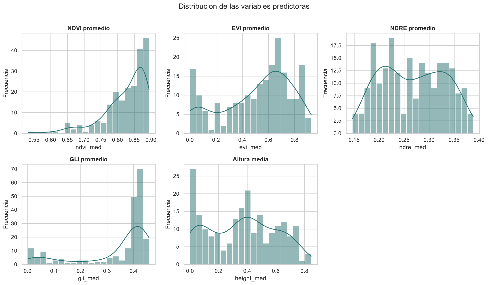
2.1.1.2 Calidad de los datos
No se detectaron valores faltantes, ni infinitos; sin embargo, sí se identificó una fila duplicada: las filas originales 174 y 175 contienen exactamente los mismos valores en todas las variables.
Adicionalmente, en 48 observaciones coinciden de forma exacta los valores de EVI, GLI y altura. Esta coincidencia se concentra sobre todo en las severidades 3 y 4, y resulta poco probable tratándose de tres variables que en teoría se miden de forma independiente. Las observaciones no fueron modificadas ni eliminadas, pero es pertinente confirmar los datos, antes de entrenar los modelos.
| Indicador | Valor |
|---|---|
| numero_observaciones | 212 |
| numero_variables_predictoras | 5 |
| numero_categorias_severidad | 6 |
| valores_faltantes | 0 |
| valores_infinitos | 0 |
| filas_duplicadas_adicionales | 1 |
| registros_evi_gli_altura_iguales | 48 |
2.1.1.3 Diferencias entre categorías
La comparación visual por categoría se presenta a continuación. Los boxplots muestran tanto el desplazamiento de la mediana como la dispersión de cada predictor en cada nivel de severidad.
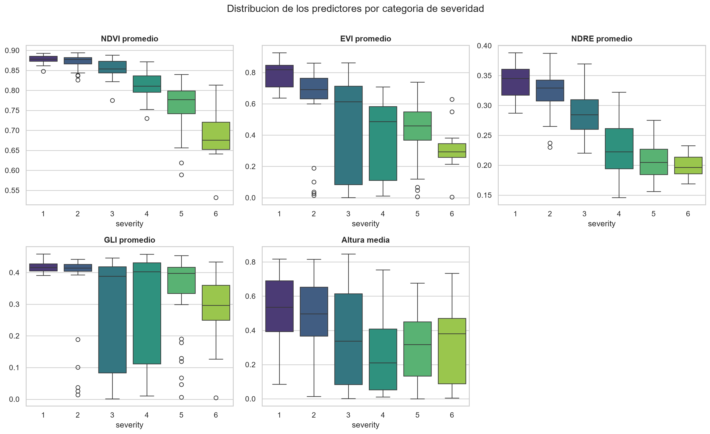
La tendencia promedio por severidad se resume en la siguiente figura, que permite distinguir qué variables cambian de manera más ordenada a medida que avanza la severidad y, cuáles muestran un comportamiento menos monotónico.
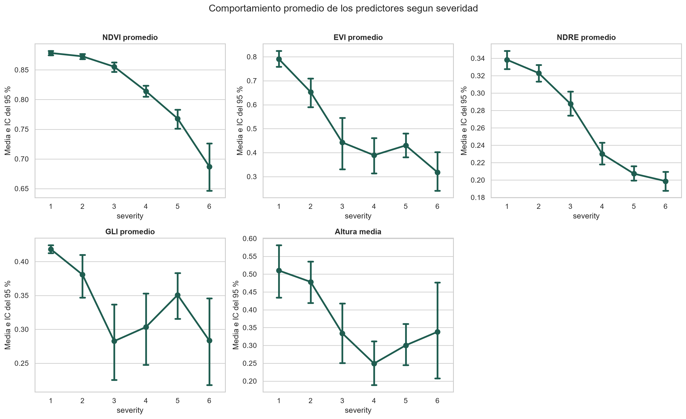
2.1.1.3.1 NDVI
El NDVI es el predictor con el patrón ordinal más definido. Su media pasa de 0.8784 en la severidad 1 a 0.6871 en la severidad 6, con una correlación de Spearman fuerte y negativa frente a la severidad (rho = -0.8548). Las categorías 1 y 2 se solapan parcialmente, pero la separación se hace evidente a partir de la categoría 3.
2.1.1.3.2 NDRE
El NDRE sigue una tendencia igualmente consistente, con una media que desciende de 0.3383 en la severidad 1 a 0.1987 en la severidad 6 (rho = -0.8170). Junto con el NDVI, es de los predictores con mayor capacidad aparente para diferenciar niveles de enfermedad.
La siguiente figura muestra el comportamiento conjunto de NDVI y NDRE frente a la severidad, donde ambos índices decaen de forma progresiva, lo que respalda su utilidad como indicadores espectrales del deterioro fisiológico asociado a la enfermedad.
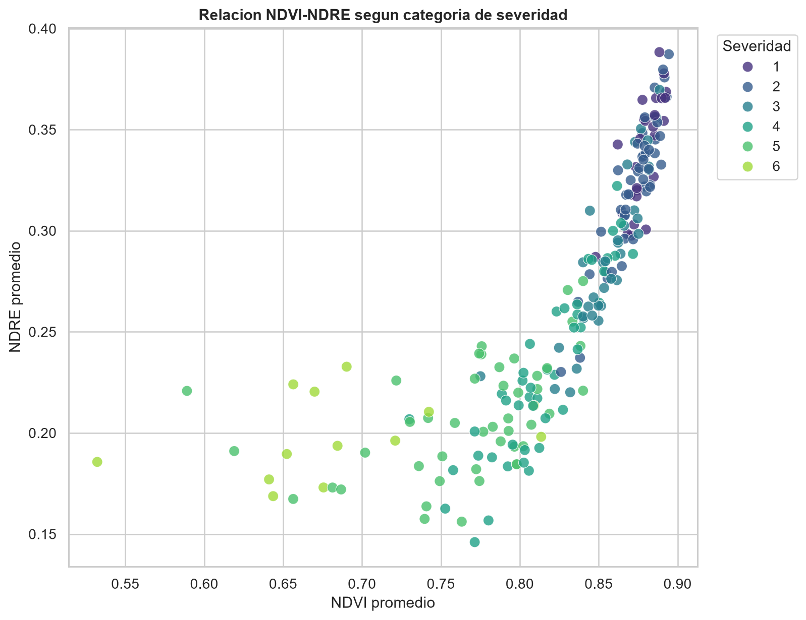
2.1.1.3.3 EVI
El EVI disminuye de 0.7905 en plantas sanas a 0.3180 en la severidad 6, con una asociación negativa, de moderada a fuerte (rho = -0.6124). No obstante, las categorías intermedias muestran alta dispersión y el patrón no es del todo monotónico, ya que la media de la severidad 5 supera ligeramente a la de la severidad 4.
2.1.1.3.4 GLI
El GLI presenta una disminución general, pero con oscilaciones entre las categorías 3, 4 y 5. Su relación con la severidad es débil (rho = -0.2535) y presenta un solapamiento considerable entre grupos. Por ello, su aporte al modelo podría depender más de relaciones no lineales o de interacciones con otras variables que de un efecto lineal directo.
2.1.1.3.5 Altura media
La altura disminuye desde una media de 0.5101 en la severidad 1 hasta 0.2492 en la severidad 4, pero aumenta de nuevo en las categorías 5 y 6. Su correlación con la severidad es negativa, pero moderada (rho = -0.3401), y sus distribuciones se solapan de forma amplia entre categorías. Por sí sola, la altura parece tener menor capacidad discriminante que el NDVI y el NDRE.
2.1.1.4 Relación entre predictores
El NDVI y el NDRE muestran una correlación de Spearman muy alta (rho = 0.94), lo que indica que ambos capturan información parcialmente redundante. El EVI, por su parte, se asocia con el GLI (rho = 0.71) y con la altura (rho = 0.66). Estas relaciones no impiden utilizar los cinco predictores en una red neuronal, pero deben considerarse al interpretar su importancia.
| Predictor | Rho de Spearman | p-valor |
|---|---|---|
| NDVI promedio | -0.8548 | 0.0000 |
| NDRE promedio | -0.8170 | 0.0000 |
| EVI promedio | -0.6124 | 0.0000 |
| Altura media | -0.3401 | 0.0000 |
| GLI promedio | -0.2535 | 0.0002 |

2.1.1.5 Transformación y estandarización
No se recomienda aplicar inicialmente transformaciones logarítmicas. Los predictores están acotados aproximadamente entre 0 y 1, y varios contienen valores muy cercanos a cero. Una transformación logarítmica dificultaría la interpretación y no resolvería el patrón de valores que requiere revisión.
Si se confirma la validez de los datos, se recomienda estandarizar los cinco predictores mediante puntuaciones Z antes de entrenar el perceptrón multicapa. Aunque sus rangos son parecidos, sus dispersiones son diferentes; la estandarización facilitará la optimización y evitará que una variable influya más por su escala numérica.
El escalador debe ajustarse exclusivamente con el conjunto de entrenamiento y luego aplicarse, sin reajuste, a los conjuntos de validación y prueba. De esta manera se evita la fuga de información.
Como salvedad de implementación, la auditoría del código mostró que los resultados actuales se generaron ajustando StandardScaler sobre la matriz completa antes de realizar las particiones. Aunque el escalador no utiliza la etiqueta de severidad, este procedimiento permite que la media y la desviación estándar de validación y prueba influyan en el preprocesamiento y constituye una fuga de información. Por ello, las métricas deben considerarse exploratorias hasta repetir el flujo ajustando cada escalador únicamente con el entrenamiento; la misma precaución aplica a las variantes espaciales de las Preguntas 17 y 18.
2.1.1.6 Conclusión
Se observan diferencias entre las categorías de severidad. El NDVI y el NDRE presentan los patrones más ordenados, con una separación clara entre plantas sanas, niveles intermedios y severidades altas. El EVI aporta una señal adicional, aunque con mayor variabilidad interna. El GLI y la altura, en cambio, muestran un solapamiento considerable y relaciones menos monotónicas frente a la severidad.
Antes de avanzar con el modelado, se debe confirmar el origen de las 48 coincidencias exactas entre EVI, GLI y altura, la fila duplicada detectada y la unidad real en que se expresa la altura. Estas observaciones se mantuvieron en el análisis tal como se suministraron.
2.1.2 Pregunta 2: Verifique si las categorías de severidad están balanceadas. En caso de desequilibrio notable, proponga y justifique al menos una estrategia para manejarlo (sobremuestreo, submuestreo, ponderación de clases u otra). Implemente la estrategia elegida y explique su efecto esperado sobre las métricas de ajuste.
2.1.2.1 Verificación del balance de clases
El conjunto de datos cuenta con 212 observaciones repartidas en seis categorías de severidad. Como se observa en la siguiente figura, la distribución no es uniforme: la categoría 2 concentra el mayor número de casos (n = 47; 22.2 %), mientras que la severidad 6 es la menos frecuente (n = 13; 6.1 %). La categoría 1, correspondiente a plantas sanas, cuenta con 27 observaciones (12.7 %).

La razón entre la frecuencia mínima y la máxima es 0.28 (13/47), lo que confirma un desequilibrio relevante. Este patrón puede ser problemático porque una red neuronal entrenada sin corrección tendería a favorecer las clases mayoritarias (2, 4 y 5). El resultado podría ser una exactitud global aparentemente aceptable, pero acompañada de fallas sistemáticas en los extremos del espectro de severidad, que son categorías de especial interés agronómico.
2.1.2.2 Estrategia implementada: SMOTE
La estrategia de balanceo elegida fue SMOTE (Synthetic Minority Over-sampling Technique), que genera observaciones sintéticas para las clases subrepresentadas mediante interpolación lineal entre cada muestra minoritaria y sus k vecinos más cercanos, introduciendo variabilidad controlada y evitando la simple duplicación de registros existentes.
Dado el tamaño muestral reducido (n = 212), se descartó el submuestreo aleatorio, pues implicaría una pérdida considerable de información: en el esquema 70/15/15, el conjunto de entrenamiento se reduciría a 54 observaciones (9 por cada una de las seis categorías). La ponderación de clases (class_weight='balanced') también es una alternativa razonable, aunque actúa sobre la función de pérdida y no aumenta la representación de las clases minoritarias en el espacio de características.
El SMOTE se aplicó únicamente sobre el conjunto de entrenamiento, después de realizada la partición de los datos. De haberlo hecho antes, se podría haber introducido fuga de información (data leakage) en las muestras sintéticas derivadas de observaciones del conjunto de prueba, contaminando el entrenamiento e inflando de forma artificial las métricas de evaluación.
En la siguiente tabla se resume el balance del conjunto de entrenamiento en el esquema 70/15/15, antes y después de aplicar SMOTE.
| Severidad | Entrenamiento antes de SMOTE | Entrenamiento después de SMOTE |
|---|---|---|
| 1 | 19 | 33 |
| 2 | 33 | 33 |
| 3 | 25 | 33 |
| 4 | 31 | 33 |
| 5 | 31 | 33 |
| 6 | 9 | 33 |
Después del sobremuestreo, las seis categorías quedaron representadas con 33 observaciones en el conjunto de entrenamiento. Los conjuntos de validación y prueba no se modificaron, de modo que conservan la distribución original y permiten evaluar el desempeño del modelo en condiciones realistas.
Se espera que esta corrección mejore la sensibilidad (recall) de las clases 1 y 6, distribuya los errores de manera más equitativa en la matriz de confusión y eleve el F1 macro, una métrica especialmente informativa en escenarios de desequilibrio porque concede el mismo peso a todas las categorías.
2.1.2.3 Conclusión
El análisis de balance de clases mostró un desequilibrio moderado-alto (razón mínima/máxima de 0.28) que, de dejarse sin corregir, habría limitado la capacidad del modelo para identificar correctamente las categorías de severidad extrema, justamente las de mayor relevancia fitosanitaria. Aplicar SMOTE sobre el conjunto de entrenamiento resulta una respuesta metodológicamente sólida frente a este problema, ya que genera variabilidad sintética representativa sin sacrificar observaciones reales ni comprometer la integridad de la evaluación posterior. El hecho de aplicarlo estrictamente después de la partición de los datos garantiza que las métricas reportadas reflejen el desempeño del modelo frente a datos no vistos.
2.2 Partición de datos
2.2.1 Pregunta 3: Partición de datos y selección de hiperparámetros. Para cada esquema, entrene un perceptrón multicapa con la misma arquitectura inicial y compare los resultados. Explique en detalle cuál es la ventaja del esquema de tres particiones frente al de dos, en particular con respecto al riesgo de sobreajuste y a la selección de hiperparámetros.
Se trabajó con dos esquemas de partición estratificada, buscando conservar en cada subconjunto, en la medida de lo posible, la proporción original de las categorías de severidad. En ambos casos, el sobremuestreo con SMOTE se aplicó exclusivamente sobre el conjunto de entrenamiento. En el esquema 80/20, el entrenamiento original quedó con 169 observaciones, balanceadas posteriormente hasta 222 registros, mientras que la prueba conservó 43 observaciones. En el esquema 70/15/15, el entrenamiento original partió de 148 observaciones y se balanceó hasta 198, con validación y prueba de 32 observaciones cada una.
2.2.1.1 Esquema A: Entrenamiento / Prueba (80 % / 20 %)
Este esquema destina 169 observaciones originales al entrenamiento y 43 a la prueba. Su debilidad metodológica más importante es la ausencia de un conjunto de validación independiente; si cualquier decisión sobre hiperparámetros (número de capas, neuronas o tasa de aprendizaje) se toma mirando el desempeño en el conjunto de prueba, este podría terminar funcionando como conjunto de validación. En ese caso, el modelo finalmente elegido ya no es necesariamente el más generalizable, sino el que mejor se ajusta a esa muestra de prueba en particular, lo que introduce un sesgo optimista y compromete la comparación justa entre configuraciones.
2.2.1.2 Esquema B: Entrenamiento / Validación / Prueba (70 % / 15 % / 15 %)
En este esquema, las observaciones se reparten aproximadamente en 148, 32 y 32 para cada conjunto, con funciones bien diferenciadas entre ellos. El entrenamiento ajusta los pesos de la red mediante retropropagación; la validación monitorea la pérdida durante el entrenamiento para detectar sobreajuste y activar el early stopping, sin que el modelo aprenda directamente de ella; y la prueba se reserva por completo para el reporte final, consultándose una sola vez al terminar todo el proceso. Esta separación de roles protege la integridad de la evaluación y asegura que las métricas reportadas sean una estimación razonablemente imparcial del error de generalización frente a datos nuevos.
Con 212 observaciones, los conjuntos de validación y prueba quedan reducidos a cerca de 32 observaciones cada uno, lo que añade varianza a las estimaciones. Basta con que una observación cambie de clasificación para que la exactitud varíe aproximadamente 3.1 puntos porcentuales. Esta limitación motiva la exploración de la validación cruzada k-fold en la Pregunta 4 como estrategia complementaria.
2.2.1.3 Comparación experimental del MLP inicial
Para realizar la comparación, se entrenó la misma arquitectura inicial en los dos esquemas: una capa oculta de 16 neuronas, activación ReLU, salida softmax, tasa de aprendizaje de 0.001 y pérdida de entropía cruzada categórica. En el esquema 80/20, al no contar con validación independiente, el entrenamiento se realizó con un número fijo de épocas; en el esquema 70/15/15, en cambio, se usó el conjunto de validación para monitorear la pérdida y aplicar early stopping.
| Esquema | Entrenamiento usado | Validación | Prueba | Épocas ejecutadas | Exactitud entrenamiento | Exactitud validación | Exactitud prueba |
|---|---|---|---|---|---|---|---|
| 80/20 | 222 | - | 43 | 150 | 0.5991 | - | 0.3721 |
| 70/15/15 | 198 | 32 | 32 | 109 | 0.6061 | 0.5312 | 0.3438 |
Con esta arquitectura inicial, el esquema 80/20 alcanzó una mayor exactitud en prueba. Eso, sin embargo, no lo convierte automáticamente en el esquema metodológicamente más adecuado: al carecer de validación independiente, cualquier ajuste posterior de arquitectura o hiperparámetros basado en la prueba terminaría contaminando la evaluación final. El esquema 70/15/15, aunque cede parte de los datos de entrenamiento y puede mostrar más variabilidad por el tamaño reducido de validación y prueba, mantiene claramente separadas tres decisiones:
- el ajuste de los pesos;
- la selección de hiperparámetros;
- la evaluación final.
2.2.1.4 Conclusión
La validez de las métricas reportadas y la confiabilidad de la selección del modelo dependen del esquema de partición. El esquema 80/20 maximiza los datos disponibles para entrenamiento, pero no ofrece un conjunto independiente para seleccionar hiperparámetros. El esquema 70/15/15, en contraste, mantiene una separación metodológica entre optimización y evaluación. Por esta razón, se adoptó el esquema de tres particiones como referencia para las preguntas siguientes, reconociendo como limitación la mayor varianza asociada con subconjuntos pequeños.
2.2.2 Pregunta 4: Dado que el tamaño muestral es mayor a 200 pero no muy grande, ¿considera que sería apropiado usar validación cruzada k-fold como alternativa o complemento? Argumente su respuesta y, si decide implementarla, reporte los resultados comparativos.
Con un tamaño de muestra de 212 observaciones, estimar el error de generalización a partir de una única partición fija implica asumir una varianza considerable, ya que la composición del conjunto de prueba influye en las métricas obtenidas. Por esta razón, se considera apropiado usar validación cruzada estratificada k-fold como complemento del esquema 70/15/15, no como reemplazo de la evaluación final.
Asimismo, se implementó una validación cruzada estratificada de cinco pliegues (k = 5) usando el mismo tipo de modelo de la Parte I: un perceptrón multicapa con una capa oculta de 16 neuronas, activación ReLU, salida softmax, tasa de aprendizaje de 0.001 y pérdida de entropía cruzada categórica. Para evitar fuga de información, en cada pliegue el escalador se ajustó únicamente con el subconjunto de entrenamiento y luego se aplicó al subconjunto de validación; de igual forma, SMOTE se aplicó solo sobre el entrenamiento de cada pliegue, manteniendo intacta la validación.
2.2.2.1 Resultados por pliegue
| Pliegue | Entrenamiento original | Entrenamiento usado | Validación | SMOTE aplicado | Épocas ejecutadas | Exactitud validación | F1 macro validación | Pérdida validación |
|---|---|---|---|---|---|---|---|---|
| 1 | 169 | 222 | 43 | Si | 150 | 0.4884 | 0.4960 | 1.0564 |
| 2 | 169 | 222 | 43 | Si | 150 | 0.4884 | 0.4847 | 1.2404 |
| 3 | 170 | 228 | 42 | Si | 150 | 0.5476 | 0.4397 | 1.1021 |
| 4 | 170 | 228 | 42 | Si | 92 | 0.4048 | 0.4258 | 1.2029 |
| 5 | 170 | 228 | 42 | Si | 79 | 0.4524 | 0.4352 | 1.2748 |
Los resultados de validación oscilan entre 0.4048 y 0.5476 de exactitud, con una media de 0.4763 y una desviación estándar de 0.0526. Esta dispersión confirma que, con solo 212 observaciones, el desempeño estimado depende de las observaciones que conforman cada pliegue de evaluación. El F1 macro promedio fue de 0.4563 ± 0.0318, dato especialmente relevante porque la exactitud global puede ocultar errores sistemáticos en las clases minoritarias.
2.2.2.2 Comparación con la partición fija
| Estrategia | Conjunto | Exactitud | Desv. exact. | F1 macro | Desv. F1 macro |
|---|---|---|---|---|---|
| Partición 70/15/15 | Prueba independiente | 0.3438 | - | 0.3214 | - |
| k-fold estratificado (k=5) | Validaciones internas | 0.4763 | 0.0526 | 0.4563 | 0.0318 |
La partición fija 70/15/15 generó una exactitud de prueba de 0.3438 para el MLP inicial, mientras que la validación cruzada k-fold estimó una exactitud media de 0.4763. La primera estrategia evalúa una única partición mediante la reserva de un conjunto de prueba para el reporte final, mientras que k-fold promedia cinco evaluaciones internas y permite cuantificar la variabilidad entre particiones.
2.2.2.3 Rol metodológico en la estrategia global
La validación cruzada k-fold es útil como complemento durante la selección de hiperparámetros, ya que reduce el riesgo de elegir una configuración que funcione bien únicamente para una división específica de los datos. Sin embargo, no sustituye la partición fija 70/15/15 adoptada en la Pregunta 3, ya que esta conserva un conjunto de prueba independiente y trazable para reportar las métricas finales del modelo seleccionado.
2.2.2.4 Conclusión
La validación cruzada estratificada con k = 5 es apropiada como herramienta complementaria, ya que sus resultados confirman, por un lado, que el error de generalización varía de forma no despreciable entre particiones y, por otro, que los predictores espectrales contienen señal suficiente para superar ampliamente lo que se esperaría de una clasificación aleatoria entre seis clases. El k-fold se utiliza para estimar la estabilidad del desempeño y apoyar la selección de hiperparámetros, mientras que la partición fija 70/15/15 se mantiene como referencia para la evaluación final del modelo.
2.3 Arquitectura y entrenamiento
2.3.1 Pregunta 5: Entrene al menos cuatro perceptrones multicapa variando sistemáticamente el número de capas ocultas, neuronas por capa y tasa de aprendizaje. Para cada configuración reporte la pérdida en entrenamiento y validación por época. ¿En qué configuraciones observa indicios de sobreajuste o subajuste?
Se entrenaron ocho arquitecturas de perceptrón multicapa para la clasificación multiclase de la severidad de Verticillium sp. (seis categorías: 1 = planta sana, 2 a 6 = niveles crecientes de severidad). La variación sistemática incluyó el número de capas ocultas (1, 2 y 3), el número de neuronas por capa (16, 32 y 64, evaluando al menos dos tamaños en cada número de capas) y la tasa de aprendizaje (0.001, 0.01 y 0.1). En lugar de un barrido factorial exhaustivo de las 27 combinaciones posibles, se optó por un diseño curado de ocho configuraciones que satisface los mínimos pedidos en el enunciado; esto tiene como consecuencia que la tasa de aprendizaje no varía de forma completamente independiente dentro de cada arquitectura, sino que queda parcialmente confundida con la combinación de capas y neuronas, aspecto que se tendrá presente al interpretar su efecto más adelante.
La muestra de 212 observaciones presenta un desbalance moderado entre categorías (conteos entre 13 y 47 observaciones). Por ello, el entrenamiento se realizó sobre el conjunto balanceado mediante SMOTE, dejando validación y prueba sin sobremuestrear. Con el esquema 70/15/15 de la Pregunta 3 se obtuvieron los siguientes tamaños: entrenamiento balanceado = 198, validación = 32 y prueba = 32 observaciones. El tamaño reducido de validación y prueba debe tenerse presente al interpretar diferencias pequeñas entre configuraciones: con 32 observaciones, una predicción adicional correcta modifica la exactitud en cerca de 3.1 puntos porcentuales. Todas las redes utilizaron activación ReLU en las capas ocultas y salida softmax, con entropía cruzada categórica dispersa como función de pérdida y early stopping monitoreando la pérdida de validación.
Los criterios usados para seleccionar la mejor configuración se establecieron teniendo en cuenta la menor pérdida de validación, y no por la exactitud de prueba. Emplear el conjunto de prueba para elegir hiperparámetros lo convertiría, en la práctica, en una extensión del conjunto de validación, contaminando la evaluación final con un sesgo optimista, justamente el problema que la partición en tres conjuntos de la Pregunta 3 buscaba evitar. Por esa razón, la exactitud de prueba se reporta únicamente a modo descriptivo, una vez seleccionado el modelo.
2.3.1.1 Resultados obtenidos
La tabla siguiente resume el desempeño de las ocho configuraciones entrenadas. El historial completo de pérdida y exactitud por época para cada arquitectura se guardó en resultados/tablas/14_p5_historial_perdida_por_epoca.csv; por su extensión, en el presente informe se relaciona la síntesis numérica y las curvas de aprendizaje.
| Config. | Capas | Neuronas | Tasa (lr) | Épocas | Pérd. entren. | Pérd. valid. | Exact. valid. |
|---|---|---|---|---|---|---|---|
| 2L-64N-lr0.1 | 2 | 64 | 0.1000 | 32 | 0.8957 | 0.9958 | 0.5938 |
| 3L-32N-lr0.01 | 3 | 32 | 0.0100 | 22 | 0.7291 | 1.0404 | 0.5938 |
| 1L-32N-lr0.01 | 1 | 32 | 0.0100 | 24 | 0.8361 | 1.0987 | 0.5625 |
| 2L-16N-lr0.01 | 2 | 16 | 0.0100 | 25 | 0.8294 | 1.1068 | 0.5312 |
| 3L-16N-lr0.001 | 3 | 16 | 0.0010 | 52 | 0.8859 | 1.1097 | 0.5938 |
| 1L-16N-lr0.001 | 1 | 16 | 0.0010 | 103 | 0.9308 | 1.1424 | 0.5312 |
| 2L-32N-lr0.001 | 2 | 32 | 0.0010 | 47 | 0.8501 | 1.1460 | 0.5312 |
| 3L-64N-lr0.001 | 3 | 64 | 0.0010 | 27 | 0.8214 | 1.1564 | 0.5312 |
Para cada configuración, las curvas de aprendizaje muestran la evolución de la pérdida en entrenamiento y validación por época. Esta visualización permite identificar si la red reduce ambas pérdidas de manera coordinada, si la pérdida de entrenamiento sigue bajando mientras la validación empeora, o si ambas permanecen altas.
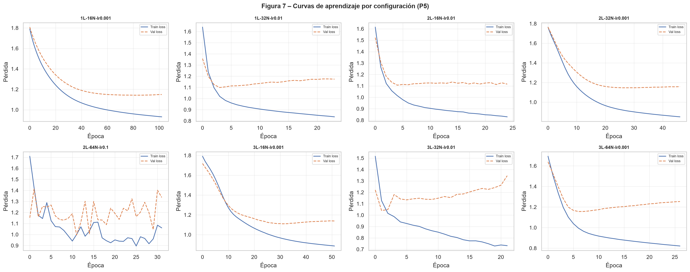
El modelo seleccionado, según el criterio predefinido de menor pérdida de validación, fue 2L-64N-lr0.1 (Loss Val mínima = 0.9958), con una exactitud máxima de validación de 0.5938. Esta decisión mantiene la selección de arquitectura dentro del proceso de entrenamiento y reserva el conjunto de prueba para la evaluación detallada de la Pregunta 7.
2.3.1.2 Diagnóstico de sobreajuste y subajuste
La configuración más simple, 1L-16N-lr0.001, necesitó 103 épocas y alcanzó una exactitud máxima de entrenamiento de 0.6010. Esta combinación de muchas épocas, pérdida de validación relativamente alta (1.1424) y desempeño de entrenamiento moderado sugiere subajuste. La red aprende lentamente y su capacidad de representación parece limitada para separar seis categorías con solapamiento espectral.
Los indicios más claros de sobreajuste aparecen en configuraciones con mayor brecha entre entrenamiento y validación, especialmente 3L-64N-lr0.001 (Brecha Acc Train-Val = 0.1304; Brecha Loss Val-Train = 0.3350) y 2L-32N-lr0.001 (Brecha Acc Train-Val = 0.1253; Brecha Loss Val-Train = 0.2959). En estas redes, la mejora en entrenamiento no se transfiere con la misma intensidad a validación, patrón compatible con memorización parcial del conjunto de entrenamiento, incluidas las muestras sintéticas generadas por SMOTE.
La configuración 2L-64N-lr0.1 muestra el mejor valor mínimo de pérdida de validación y una brecha de exactitud muy baja, pero su curva debe interpretarse con cautela, ya que la tasa de aprendizaje alta permite alcanzar rápidamente una buena región, aunque la pérdida de validación se deteriora después del mínimo. En este caso, el early stopping es crucial para recuperar los pesos de la época con mejor validación y evitar que el entrenamiento continúe hacia una zona menos estable.
2.3.1.3 Conclusión
En comparación, la arquitectura más simple tiende al subajuste, mientras que algunas arquitecturas de mayor capacidad presentan señales de sobreajuste cuando la brecha entre entrenamiento y validación aumenta. El mejor modelo, según la pérdida mínima de validación, fue 2L-64N-lr0.1, aunque su tasa de aprendizaje exige apoyarse en early stopping para conservar la mejor época. Asimismo, deben señalarse dos limitaciones: el diseño de ocho configuraciones no permite aislar por completo el efecto de la tasa de aprendizaje del efecto de la arquitectura, y el tamaño reducido de validación y prueba (32 observaciones cada uno) implica que las diferencias pequeñas deben interpretarse con cautela.
2.3.2 Pregunta 6: Implemente y compare dos criterios para cuantificar el error durante el entrenamiento: entropía cruzada categórica (CCE) y error cuadrático medio (MSE). ¿Cuál es más apropiado para un problema de clasificación múltiple? Fundamente su respuesta tanto teórica como empíricamente.
Se entrenaron dos modelos con la arquitectura seleccionada en la Pregunta 5 (2L-64N-lr0.1), los mismos datos y el mismo protocolo de entrenamiento. La diferencia metodológica fue la función de pérdida y, por necesidad, el formato de las etiquetas: para la entropía cruzada se usó sparse_categorical_crossentropy con etiquetas enteras; para MSE se usaron etiquetas en formato one-hot.
No se forzó una inicialización idéntica de pesos antes de entrenar ambos modelos. En consecuencia, aunque la diferencia observada es amplia y favorece a CCE, una fracción de esa diferencia podría deberse a la variación estocástica del entrenamiento. Una comparación confirmatoria debería repetir ambos criterios con varias semillas o con pesos iniciales compartidos.
2.3.2.1 Resultados obtenidos
| Función de pérdida | Implementación | Arquitectura | Exactitud prueba | Aciertos | Total | Decisión metodológica |
|---|---|---|---|---|---|---|
| Entropía cruzada categórica | sparse_categorical_crossentropy | 2L-64N-lr0.1 | 0.4375 | 14 | 32 | Recomendada para clasificación multiclase con softmax |
| Error cuadrático medio | mean_squared_error | 2L-64N-lr0.1 | 0.2188 | 7 | 32 | Comparativa; no recomendada como criterio principal |
Con la arquitectura seleccionada en la Pregunta 5, CCE obtuvo una exactitud de prueba de 0.4375 (14/32), mientras que MSE obtuvo 0.2188 (7/32). La diferencia empírica favorece claramente a CCE en esta ejecución: el modelo entrenado con entropía cruzada clasificó correctamente el doble de observaciones que el modelo entrenado con MSE.
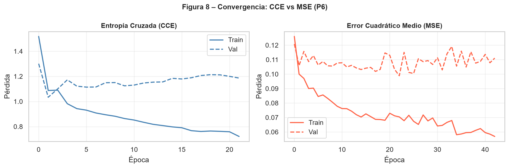
Las curvas de entrenamiento muestran que ambas funciones reducen la pérdida durante el ajuste, pero no optimizan el mismo objetivo probabilístico. Por esta razón, la comparación directa de los valores de pérdida entre CCE y MSE debe observar la estabilidad de la validación y el desempeño final sobre la prueba.
2.3.2.2 Fundamento teórico
La entropía cruzada categórica es coherente con la capa de salida softmax: maximiza la verosimilitud de una distribución categórica y constituye una regla de puntuación propia (proper scoring rule). Penaliza de forma creciente la confianza asignada a una clase incorrecta y proporciona gradientes informativos cuando la predicción está alejada del valor real. El error cuadrático medio, en cambio, fue diseñado principalmente para variables continuas; aplicado sobre probabilidades softmax con codificación one-hot, puede producir gradientes menos informativos cuando las salidas se acercan a 0 o a 1. Además, MSE trata las probabilidades de clase como coordenadas continuas, no como una distribución categórica que debe concentrar probabilidad en la clase verdadera.
2.3.2.3 Conclusión
Para este caso de clasificación múltiple, se recomienda la entropía cruzada categórica como función de pérdida, ya que es coherente con la salida softmax y con la arquitectura seleccionada, obteniendo mayor exactitud de prueba que MSE. Aunque el conjunto de prueba es pequeño y las métricas deben interpretarse con cautela, en esta comparación la evidencia práctica y el fundamento estadístico apuntan en la misma dirección: CCE es más apropiada que MSE para entrenar el perceptrón multicapa multiclase.
2.4 Métricas de evaluación
2.4.1 Pregunta 7: Para el modelo seleccionado en la Pregunta 5, reporte exactitud global, precisión, sensibilidad y F1 por clase, macro-promedio y promedio ponderado, matriz de confusión con interpretación, y curva ROC/AUC uno-contra-todos. ¿Qué categorías de severidad son más difíciles de clasificar? ¿A qué lo atribuye?
Se evaluó el modelo seleccionado en la Pregunta 5, 2L-64N-lr0.1, entrenado con entropía cruzada categórica, sobre el conjunto de prueba reservado (n = 32). La exactitud global obtenida fue de 0.4375; es decir, el modelo clasificó correctamente 14 de las 32 observaciones de prueba.
2.4.1.1 Resumen global
| Modelo | Exactitud | Aciertos | Total prueba | F1 macro | F1 ponderado | AUC-ROC macro |
|---|---|---|---|---|---|---|
| 2L-64N-lr0.1 | 0.4375 | 14 | 32 | 0.3137 | 0.3909 | 0.7588 |
2.4.1.2 Métricas por clase
| Clase | Precisión | Sensibilidad | F1-score | Soporte |
|---|---|---|---|---|
| Sev 1 | 0 | 0 | 0 | 4 |
| Sev 2 | 0.4615 | 0.8571 | 0.6000 | 7 |
| Sev 3 | 0.2857 | 0.4000 | 0.3333 | 5 |
| Sev 4 | 0.4000 | 0.2857 | 0.3333 | 7 |
| Sev 5 | 0.6667 | 0.5714 | 0.6154 | 7 |
| Sev 6 | 0 | 0 | 0 | 2 |
| Macro-promedio | 0.3023 | 0.3524 | 0.3137 | 32 |
| Promedio ponderado | 0.3789 | 0.4375 | 0.3909 | 32 |
El macro F1-score fue de 0.3137, inferior al F1 ponderado (0.3909). Esta diferencia indica que el desempeño global está favorecido por las clases con mayor soporte en prueba, mientras que las clases minoritarias o difíciles, especialmente Sev 1 y Sev 6, reducen de forma marcada el promedio no ponderado.
2.4.1.3 Matriz de confusión
La matriz de confusión, con filas correspondientes a la severidad real y columnas a la severidad predicha, se presenta a continuación.
| Real / Predicho | Sev 1 | Sev 2 | Sev 3 | Sev 4 | Sev 5 | Sev 6 |
|---|---|---|---|---|---|---|
| Sev 1 | 0 | 4 | 0 | 0 | 0 | 0 |
| Sev 2 | 0 | 6 | 1 | 0 | 0 | 0 |
| Sev 3 | 1 | 2 | 2 | 0 | 0 | 0 |
| Sev 4 | 0 | 1 | 2 | 2 | 2 | 0 |
| Sev 5 | 0 | 0 | 1 | 2 | 4 | 0 |
| Sev 6 | 0 | 0 | 1 | 1 | 0 | 0 |
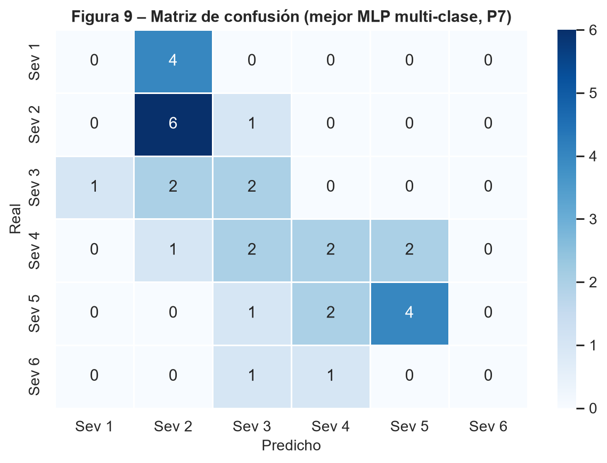
La matriz evidencia una tendencia a concentrar predicciones en severidades intermedias y altas: todos los casos reales de Sev 1 fueron clasificados como Sev 2, y ninguno de los dos casos reales de Sev 6 fue clasificado correctamente. En cambio, Sev 2 y Sev 5 concentran la mayor cantidad de aciertos absolutos, con 6/7 y 4/7 casos correctos, respectivamente.
2.4.1.4 Curvas ROC y AUC
| Clase | AUC-ROC | Esquema |
|---|---|---|
| Sev 1 | 0.8571 | One-vs-rest |
| Sev 2 | 0.7171 | One-vs-rest |
| Sev 3 | 0.7296 | One-vs-rest |
| Sev 4 | 0.6914 | One-vs-rest |
| Sev 5 | 0.8657 | One-vs-rest |
| Sev 6 | 0.6917 | One-vs-rest |
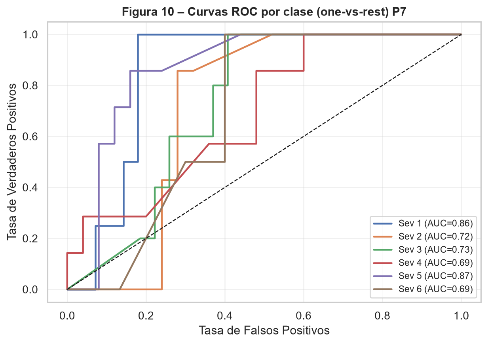
El AUC-ROC macro fue de 0.7588, lo que sugiere que el modelo conserva cierta capacidad de ordenamiento probabilístico entre clases, incluso cuando la decisión final por argmax produce errores importantes. Esta diferencia entre AUC y F1 es especialmente visible en Sev 1: su AUC es relativamente alto (0.8571), pero su F1 es 0 porque, bajo la regla de clase final, ningún caso real de Sev 1 fue asignado correctamente.
2.4.1.5 Interpretación por categoría
Las categorías más difíciles de clasificar correctamente fueron Sev 1 y Sev 6, ambas con precisión, sensibilidad y F1-score iguales a 0. En Sev 1, los cuatro casos reales fueron desplazados hacia Sev 2, lo que indica que el modelo no logra separar de forma robusta plantas sanas de plantas con severidad leve bajo la regla de decisión final. En Sev 6, los dos casos disponibles en prueba fueron clasificados como Sev 3 y Sev 4; este resultado debe interpretarse con cautela por el soporte extremadamente pequeño, pero confirma que la clase más severa no está bien representada.
Entre las clases intermedias, Sev 4 también presenta dificultad: su AUC-ROC es el más bajo (0.6914) y solo 2 de 7 casos reales fueron clasificados correctamente. Esto es consistente con el carácter ordinal del problema: las severidades intermedias comparten señales espectrales con categorías vecinas y se solapan en variables como EVI, GLI y altura. Por contraste, Sev 5 fue la categoría con mejor F1-score (0.6154) y mayor AUC (0.8657), lo que sugiere una señal espectral más distinguible para niveles altos pero no extremos de daño.
2.4.1.6 Conclusión
El desempeño multiclase del MLP es moderado y desigual entre categorías. La exactitud global de 0.4375 supera la clasificación aleatoria esperada para seis clases, pero el macro F1-score de 0.3137 revela que el modelo no trata todas las severidades con la misma eficacia. Las clases más problemáticas son Sev 1 y Sev 6 por ausencia de aciertos directos, y Sev 4 por su bajo AUC y confusión con clases vecinas. Esto sugiere que seis niveles ordinales pueden ser demasiado finos para el tamaño muestral disponible y anticipa la pertinencia de explorar la clasificación binaria en la Parte II.
3 Parte II: Clasificación binaria de severidad
3.1 Colapso de categorías
3.1.1 Pregunta 8: Proponga y justifique un criterio para colapsar las categorías de severidad en sano versus enfermo. Discuta si esta agrupación es la más apropiada o si existiría una alternativa mejor fundamentada. ¿Se pierde información relevante?
El criterio adoptado asigna la severidad 1 a la categoría “Sano” (0) y las severidades 2 a 6 a la categoría “Enfermo” (1). Con los datos disponibles, esto produce una distribución binaria fuertemente desbalanceada:
| Grupo | Código | Severidades originales | Observaciones | Porcentaje |
|---|---|---|---|---|
| Sano | 0 | 1 | 27 | 12.74 |
| Enfermo | 1 | 2-6 | 185 | 87.26 |
3.1.1.1 Criterio adoptado y justificación
Desde el punto de vista agronómico, para un sistema de alerta temprana la decisión operativa relevante no es cuán severa es la infección sino si existe evidencia de infección que amerite intervención. Agrupar cualquier nivel de severidad igual o superior a 2 como “Enfermo” tiene sentido práctico en ese contexto, pues prioriza la sensibilidad de detección sobre la caracterización fina del estado de avance de la enfermedad.
3.1.1.2 Alternativas y pérdida de información
Este criterio es defendible, pero no es el único razonable. Los resultados actualizados de la Pregunta 7 muestran que el modelo multiclase tiene dificultades importantes en los extremos Sev 1 y Sev 6, ambas con F1-score igual a 0, y también en Sev 4 por su baja separación probabilística. En particular, los cuatro casos reales de Sev 1 fueron clasificados como Sev 2, lo que indica que separar estrictamente sano de severidad leve es difícil con la información disponible.
Desde ese punto de vista, una alternativa mejor fundamentada para algunos usos agronómicos sería trabajar con tres grupos ordinales: sano (Sev 1), enfermedad leve o intermedia (Sev 2 a 4) y enfermedad avanzada (Sev 5 a 6). Esta alternativa conservaría parte del gradiente de severidad y evitaría mezclar en una sola clase “Enfermo” casos muy distintos, desde síntomas leves hasta daño avanzado. Sin embargo, como el enunciado solicita explícitamente una clasificación binaria sano versus enfermo, y como en un sistema de alerta temprana la prioridad es detectar cualquier indicio de infección, se mantiene el colapso Sev 1 frente a Sev 2-6.
Sí se pierde información relevante al hacer esta reducción: toda distinción de severidad dentro de “Enfermo” desaparece, y esa categoría concentra el 87.26 % de la muestra (185 de 212 observaciones). La pérdida no es menor, porque Sev 2 y Sev 5 tuvieron desempeños bastante diferentes en la Pregunta 7: Sev 2 alcanzó alta sensibilidad, mientras que Sev 5 obtuvo el mejor F1-score y el mayor AUC. Al fusionarlas, el modelo binario deja de informar si la enfermedad es leve, intermedia o avanzada.
3.1.1.3 Conclusión
El colapso sano/enfermo es una simplificación razonable y alineada con el objetivo de detección temprana, pero implica una pérdida de información no trivial sobre el gradiente de severidad, y su idoneidad depende del uso que se le dé al modelo: adecuada para alertar sobre la presencia de la enfermedad, insuficiente si el objetivo es apoyar decisiones que dependan del grado de avance.
3.1.2 Pregunta 9: Entrene un perceptrón multicapa para el problema binario resultante, repitiendo el esquema de partición entrenamiento/validación/prueba. Compare el desempeño con el modelo de clasificación múltiple de la Parte I. ¿Mejora la clasificación al reducir el número de clases?
Se entrenó un perceptrón multicapa binario usando la misma arquitectura seleccionada en la Pregunta 5 (2L-64N-lr0.1), adaptada a salida sigmoide y pérdida de entropía cruzada binaria. Se repitió el esquema de partición 70/15/15 y SMOTE se aplicó únicamente sobre el conjunto de entrenamiento.
| Conjunto | Total | Sano | Enfermo |
|---|---|---|---|
| Entrenamiento original | 148 | 19 | 129 |
| Entrenamiento con SMOTE | 258 | 129 | 129 |
| Validación | 32 | 4 | 28 |
| Prueba | 32 | 4 | 28 |
3.1.2.1 Resultados obtenidos
Con el umbral por defecto de 0.5, la exactitud de prueba fue de 0.7812 (25/32), con una matriz de confusión de TN = 3, FP = 1, FN = 6, TP = 22. Las métricas por clase se resumen a continuación:
| Clase | Precisión | Sensibilidad | F1-score | Soporte |
|---|---|---|---|---|
| Sano | 0.3333 | 0.7500 | 0.4615 | 4 |
| Enfermo | 0.9565 | 0.7857 | 0.8627 | 28 |
| Macro-promedio | 0.6449 | 0.7679 | 0.6621 | 32 |
| Promedio ponderado | 0.8786 | 0.7812 | 0.8126 | 32 |
3.1.2.2 Comparación con el modelo multiclase
La comparación con el modelo multiclase seleccionado en la Parte I se presenta usando métricas comunes: exactitud, precisión macro y ponderada, sensibilidad macro y ponderada, y F1 macro y ponderado.
| Modelo | Clases | Exactitud | Precisión macro | Sensibilidad macro | F1 macro | Precisión ponderada | Sensibilidad ponderada | F1 ponderado |
|---|---|---|---|---|---|---|---|---|
| MLP multiclase | 6 | 0.4375 | 0.3023 | 0.3524 | 0.3137 | 0.3789 | 0.4375 | 0.3909 |
| MLP binario | 2 | 0.7812 | 0.6449 | 0.7679 | 0.6621 | 0.8786 | 0.7812 | 0.8126 |
La exactitud pasa de 0.4375 en el modelo multiclase a 0.7812 en el binario, y el F1 ponderado de 0.3909 a 0.8126. También mejora el F1 macro, de 0.3137 a 0.6621, lo que indica que la mejora no se debe únicamente al peso de la clase mayoritaria. No obstante, esta comparación debe interpretarse con cautela: al reducir seis categorías ordinales a dos clases, desaparecen muchos errores entre niveles de severidad que antes contaban como fallos, especialmente las confusiones entre severidad sana/leve y entre categorías intermedias.
La comparación tampoco es completamente equivalente porque el problema binario queda fuertemente desbalanceado: en prueba hay 4 observaciones sanas y 28 enfermas. Con el umbral por defecto, el modelo comete 1 falso positivo y deja 6 falsos negativos; es decir, seis plantas realmente enfermas fueron clasificadas como sanas. Desde el punto de vista fitosanitario, este error es especialmente relevante y se analiza con mayor detalle en la Pregunta 10.
3.1.2.3 Conclusión
Reducir el número de clases mejora de forma sustancial las métricas comunes frente al modelo multiclase. La mejora ocurre porque el problema binario es estructuralmente más simple y porque el colapso de categorías elimina errores de vecindad ordinal. Sin embargo, la mejora global no garantiza que el modelo sea suficiente para una decisión agronómica: con umbral 0.5 todavía produce falsos negativos, el tipo de error más costoso en un sistema de alerta temprana.
3.1.3 Pregunta 10: Reporte para el modelo binario exactitud, precisión, sensibilidad, especificidad, F1, AUC-ROC y el umbral óptimo según el criterio de Youden. Interprete cada métrica en el contexto fitosanitario: ¿qué es más costoso, un falso negativo o un falso positivo?
Con el umbral por defecto de 0.5, la sensibilidad del modelo binario fue de 22/28 = 0.7857 y la especificidad de 3/4 = 0.7500, según se reportó en la Pregunta 9. El umbral óptimo según el criterio de Youden resultó ser 0.9226, más alto que 0.5.
3.1.3.1 Resultados obtenidos
| Criterio | Umbral | Exact. | Prec. | Sens. | Espec. | F1 | AUC |
|---|---|---|---|---|---|---|---|
| Youden | 0.9226 | 0.8125 | 1 | 0.7857 | 1 | 0.8800 | 0.8348 |
También se comparó el umbral por defecto de 0.5 con el umbral óptimo de Youden:
| Criterio | Umbral | Exact. | Sens. | Espec. | F1 enferm. | FP | FN |
|---|---|---|---|---|---|---|---|
| Por defecto | 0.5000 | 0.7812 | 0.7857 | 0.7500 | 0.8627 | 1 | 6 |
| Youden | 0.9226 | 0.8125 | 0.7857 | 1 | 0.8800 | 0 | 6 |
Al subir el umbral de 0.5 a 0.9226, la matriz de confusión pasa de (TN=3, FP=1, FN=6, TP=22) a (TN=4, FP=0, FN=6, TP=22). En esta corrida, el criterio de Youden elimina el único falso positivo y aumenta la especificidad de 0.75 a 1.00, pero no recupera falsos negativos: la sensibilidad se mantiene en 0.7857. Esto muestra que el umbral óptimo según Youden mejora el equilibrio estadístico entre sensibilidad y especificidad, aunque no necesariamente maximiza el objetivo fitosanitario de detectar todas las plantas enfermas.
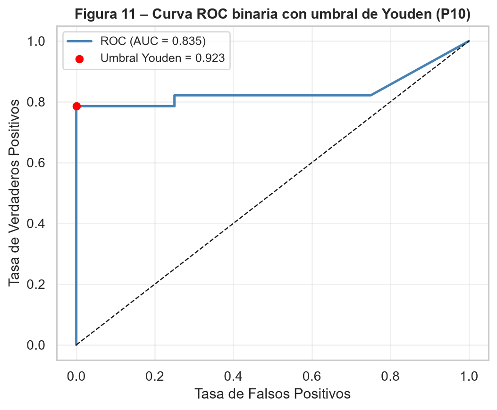
3.1.3.2 Interpretación en el contexto fitosanitario
Un falso negativo, es decir, una planta enferma clasificada como sana, es más costoso en este contexto: la planta no recibe una inspección o intervención oportuna y la infección por Verticillium sp., al tratarse de un patógeno de suelo con capacidad de dispersión, puede progresar. El costo de un falso positivo suele ser menor, pero no es nulo: puede generar inspecciones, muestreos o tratamientos innecesarios. En esta muestra, el umbral de Youden mejora la exactitud y la especificidad, pero no reduce los falsos negativos frente al umbral 0.5. Por tanto, aunque es un criterio estadístico útil, para un sistema de alerta temprana convendría evaluar umbrales alternativos definidos por una sensibilidad mínima deseada, junto con un profesional en agronomía que cuantifique el costo real de cada tipo de error.
3.1.3.3 Conclusión
El ajuste del umbral de decisión, más allá del valor por defecto de 0.5, constituye una herramienta simple para alinear el modelo con los costos reales del problema. En esta corrida, Youden mejora la especificidad y elimina falsos positivos, pero mantiene 6 falsos negativos. Por ello, la selección final del umbral no debería depender solo de Youden: si el objetivo operativo es minimizar plantas enfermas no detectadas, debe priorizarse explícitamente la sensibilidad.
Como el umbral se calculó sobre las probabilidades del conjunto de prueba, su desempeño debe considerarse exploratorio. En una aplicación futura, el umbral tendría que seleccionarse con validación o validación cruzada y evaluarse una sola vez sobre una prueba independiente.
4 Parte III: Regresión logística y comparación de modelos
4.1 Modelo de regresión logística binaria
4.1.1 Pregunta 11: Ajuste un modelo de regresión logística binaria usando la misma partición que en la Parte II. Reporte los coeficientes estimados, sus errores estándar, valores p e intervalos de confianza al 95%. ¿Qué variables son estadísticamente significativas? ¿Tienen el signo esperado desde el punto de vista agronómico?
Se ajustó una regresión logística sobre la misma partición binaria utilizada en la Parte II (entrenamiento con SMOTE, sin sobremuestreo en validación ni en prueba), usando los cuatro índices espectrales disponibles y la altura media, todos estandarizados.
Los errores estándar, valores p e intervalos de confianza se obtuvieron mediante una aproximación basada en la matriz de información del modelo. Deben interpretarse como resultados exploratorios, no como inferencia confirmatoria: el ajuste se realizó sobre un entrenamiento balanceado con observaciones sintéticas de SMOTE, que no equivalen a nuevas unidades muestrales independientes. Esta salvedad no impide responder la pregunta, pero limita la fuerza con la que puede afirmarse significancia estadística.
4.1.1.1 Resultados obtenidos
Coeficientes e inferencia aproximada de la regresión logística
| Variable | Coeficiente | Error est. | p-valor | IC 95% | Signif. | Signo esp. |
|---|---|---|---|---|---|---|
| ndvi_med | -0.8753 | 1.3252 | 0.5089 | [-3.473, 1.722] | No | Si |
| evi_med | -2.1740 | 0.6688 | 0.0012 | [-3.485, -0.863] | Si | Si |
| ndre_med | -0.7681 | 0.7991 | 0.3364 | [-2.334, 0.798] | No | Si |
| gli_med | -0.1800 | 1.0853 | 0.8683 | [-2.307, 1.947] | No | Si |
| height_med | 0.6513 | 0.3169 | 0.0398 | [0.030, 1.272] | Si | No claro |
El intercepto estimado fue:
| Parámetro | Coeficiente |
|---|---|
| Intercepto | 2.1310 |
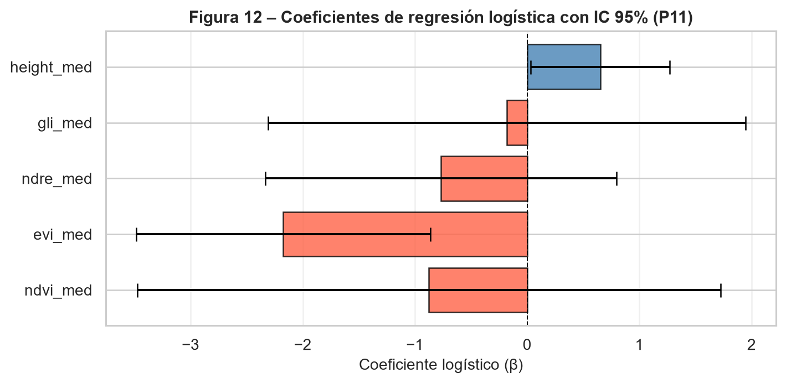
Con el criterio exploratorio de \(\alpha = 0.05\), solo el EVI (\(p = 0.0012\)) y la altura media (\(p = 0.0398\)) resultan estadísticamente significativos. El NDVI, el NDRE y el GLI no lo son en este modelo multivariado, pese a que en el análisis exploratorio de la Pregunta 1 el NDVI (\(\rho = -0.855\)) y el NDRE (\(\rho = -0.817\)) mostraron las correlaciones univariadas de Spearman más fuertes con la severidad, muy por encima de la altura (\(\rho = -0.340\)).
4.1.1.2 Interpretación de los coeficientes
La pérdida de significancia de variables con fuerte correlación univariada se explica principalmente por multicolinealidad: el NDVI, el EVI y el NDRE son índices espectrales derivados de combinaciones parcialmente solapadas de bandas de reflectancia, todos sensibles a la actividad fotosintética y al contenido de clorofila, por lo que están altamente correlacionados entre sí. Esto se refleja en los errores estándar de la tabla, donde el NDVI presenta el valor más alto de todas las variables (1.325), mayor incluso que su propio coeficiente en valor absoluto, lo que genera un intervalo de confianza extremadamente amplio que cruza el cero. Cuando varias variables comparten la misma señal subyacente, el modelo reparte el crédito explicativo entre ellas de forma inestable, y cuál de ellas termina apareciendo significativa depende de particularidades de la muestra más que de su relevancia biológica.
En cuanto al signo de los coeficientes, el NDVI, el EVI, el NDRE y el GLI son negativos, lo cual coincide con lo esperado desde el punto de vista agronómico: valores más altos de estos índices reflejan mayor vigor fotosintético y, por tanto, se asocian con una menor probabilidad de estar enfermo. La altura media, en cambio, presenta un coeficiente positivo y significativo bajo la aproximación empleada, lo que a primera vista resulta contraintuitivo, pues cabría esperar que las plantas más enfermas fueran también más bajas. Sin embargo, esto es consistente con lo observado en el análisis exploratorio: la altura promedio por severidad no decrece de forma monótona, sino que cae entre las severidades 1 y 4 y repunta en las severidades 5 y 6; además, es la variable con la correlación univariada más débil de las cinco (\(\rho = -0.340\)). Es probable que el signo positivo de la altura en el modelo multivariado sea, en parte, un artefacto de esa relación no monótona combinado con la multicolinealidad entre los índices espectrales. Por ello, debe señalarse como una limitación de la interpretación causal y no como una conclusión agronómica firme.
4.1.1.3 Conclusión
Dentro de la aproximación empleada, el EVI es el predictor individual con mayor evidencia estadística, seguido de la altura, aunque con la salvedad señalada sobre su signo. El NDVI y el NDRE, pese a ser los índices más prometedores en el análisis univariado, no aportan señal estadísticamente independiente una vez que el EVI está en el modelo, probablemente por la colinealidad entre índices espectrales. Esta redundancia se retoma en la Pregunta 12 mediante la regularización Lasso.
4.1.2 Pregunta 12: Aplique al menos un método de selección de variables sobre el modelo de regresión logística: puede usar selección paso a paso, regularización Lasso (L1) o Ridge (L2), o criterios de información (AIC/BIC). ¿Cuáles son las variables más relevantes para predecir la severidad según este modelo? Compare este resultado con la importancia de variables obtenida con la red neuronal en la Pregunta 14.
Para la selección de variables se aplicó una regresión logística con penalización Lasso (L1) y validación cruzada interna de 5 particiones. Esta estrategia es adecuada para este problema porque combina predicción y selección: al penalizar la suma de los valores absolutos de los coeficientes, puede reducir a cero las variables que no aportan información adicional relevante, especialmente cuando existe colinealidad entre predictores.
El modelo se entrenó con la misma partición binaria utilizada en la Parte II y sobre el conjunto de entrenamiento balanceado mediante SMOTE. Las variables fueron previamente estandarizadas, por lo que la magnitud absoluta de los coeficientes Lasso puede compararse como una aproximación de importancia relativa.
4.1.2.1 Resultados obtenidos
El parámetro de regularización seleccionado por validación cruzada fue:
| Método | Validación cruzada | C óptimo | Variables retenidas |
|---|---|---|---|
| Regresion logistica Lasso (L1) | 5 | 0.4281 | 4 |
La importancia de variables estimada a partir de la magnitud absoluta de los coeficientes Lasso fue:
| Variable | Coeficiente Lasso | Valor absoluto |
|---|---|---|
| evi_med | -2.0660 | 2.0660 |
| ndre_med | -0.9254 | 0.9254 |
| height_med | 0.4560 | 0.4560 |
| ndvi_med | -0.0046 | 0.0046 |
| gli_med | 0 | 0 |
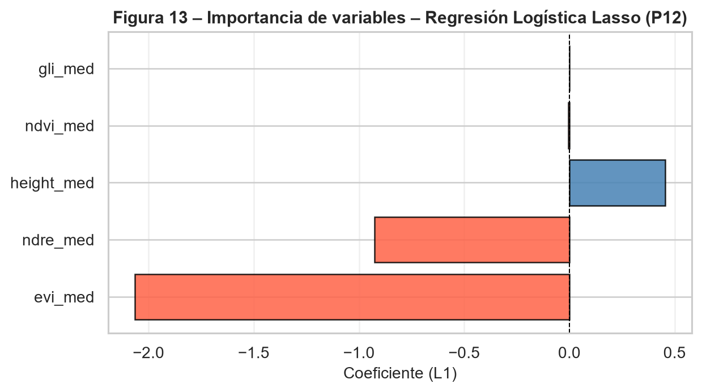
El ranking de importancia según Lasso está encabezado por evi_med, seguido de ndre_med y height_med. El ndvi_med queda con un coeficiente prácticamente nulo y gli_med es eliminado por completo del modelo. Este resultado no implica que el NDVI carezca de relación con la enfermedad; de hecho, en el análisis exploratorio presentó una de las asociaciones univariadas más fuertes con la severidad. Lo que sugiere el Lasso es que, una vez incluidas variables como EVI y NDRE, el NDVI aporta poca información adicional independiente para separar plantas sanas y enfermas.
4.1.2.2 Interpretación
El signo negativo de evi_med y ndre_med es coherente con la interpretación agronómica: valores más altos de estos índices indican mayor vigor fotosintético, mayor actividad de la vegetación y, por tanto, menor probabilidad de pertenecer al grupo enfermo. El coeficiente positivo de height_med, al igual que en la regresión logística no penalizada, debe interpretarse con cautela. La altura no mostró una relación estrictamente monótona con la severidad en el análisis exploratorio, por lo que su contribución puede estar capturando patrones residuales de la muestra más que una relación causal directa.
La eliminación de gli_med confirma su bajo aporte relativo en este conjunto de datos. En comparación con los demás índices, el GLI mostró menor asociación con la severidad y mayor solapamiento entre categorías, lo que reduce su utilidad dentro de un modelo multivariado.
4.1.2.3 Comparación con la red neuronal
La comparación con la importancia de variables del perceptrón multicapa binario se realizó usando la importancia por permutación calculada en la Pregunta 14. Aunque la red neuronal y el Lasso miden importancia de forma distinta, la comparación permite evaluar si ambos modelos identifican las mismas señales predictivas dominantes.
| Variable | Ranking Lasso | Magnitud Lasso | Ranking MLP | Importancia MLP |
|---|---|---|---|---|
| evi_med | 1 | 2.0660 | 2 | 0.0104 |
| ndre_med | 2 | 0.9254 | 3 | 0.0052 |
| height_med | 3 | 0.4560 | 1 | 0.0354 |
| ndvi_med | 4 | 0.0046 | 5 | -0.0500 |
| gli_med | 5 | 0 | 4 | -0.0344 |
El ranking de la regresión logística Lasso fue: evi_med, ndre_med, height_med, ndvi_med y gli_med. El ranking del MLP por importancia de permutación fue: height_med, evi_med, ndre_med, gli_med y ndvi_med. Por tanto, ambos enfoques coinciden en las tres variables más relevantes, pero no en el orden: Lasso prioriza los índices espectrales EVI y NDRE, mientras que el MLP asigna mayor caída de exactitud a la altura.
4.1.2.4 Conclusión
Según la regresión logística con regularización Lasso, las variables más relevantes para predecir la condición binaria de severidad son evi_med, ndre_med y height_med. La comparación con el MLP confirma que esas mismas tres variables concentran la señal predictiva principal, aunque el orden cambia: el MLP sitúa primero a la altura y después a EVI y NDRE. El NDVI pierde importancia relativa por redundancia con otros índices espectrales y GLI queda con bajo aporte marginal. Este resultado refuerza la necesidad de interpretar la importancia de variables desde una perspectiva multivariada y no únicamente a partir de correlaciones individuales.
4.1.3 Pregunta 13: Compare el modelo de regresión logística con el mejor perceptrón multicapa binario de la Parte II utilizando las mismas métricas de evaluación sobre el mismo conjunto de prueba. Construya una tabla comparativa y argumente cuál modelo elegiría para un sistema de apoyo a la decisión agronómica, considerando no solo el desempeño predictivo sino también la interpretabilidad y el costo computacional.
La regresión logística y el perceptrón multicapa binario se compararon sobre el mismo conjunto de prueba, usando las mismas métricas: exactitud, precisión, sensibilidad, especificidad, F1-score y AUC-ROC. Esta comparación es metodológicamente importante porque evita atribuir diferencias de desempeño a particiones distintas de los datos.
Para separar el efecto del modelo del efecto del umbral de clasificación, se reportan dos comparaciones: una con el umbral por defecto de 0.5 en ambos modelos y otra usando el umbral óptimo de Youden para cada modelo.
4.1.3.1 Resultados comparativos
Con el umbral por defecto de 0.5, el resultado fue:
| Modelo | Umbral | Exact. | Prec. | Sens. | Espec. | F1 | AUC |
|---|---|---|---|---|---|---|---|
| MLP Binario | 0.5000 | 0.7812 | 0.9565 | 0.7857 | 0.7500 | 0.8627 | 0.8348 |
| Regresión Logística | 0.5000 | 0.7188 | 1 | 0.6786 | 1 | 0.8085 | 0.9464 |
Con el umbral de Youden calculado para cada modelo, el resultado fue:
| Modelo | Umbral | Exact. | Prec. | Sens. | Espec. | F1 | AUC |
|---|---|---|---|---|---|---|---|
| MLP Binario | 0.9226 | 0.8125 | 1 | 0.7857 | 1 | 0.8800 | 0.8348 |
| Regresión Logística | 0.3365 | 0.9375 | 1 | 0.9286 | 1 | 0.9630 | 0.9464 |
Los umbrales de Youden se estimaron con el mismo conjunto usado para calcular las métricas, por lo que esta comparación es descriptiva y puede ser optimista. Para seleccionar un modelo operativo, los umbrales deben fijarse con validación y aplicarse después a un conjunto de prueba independiente.
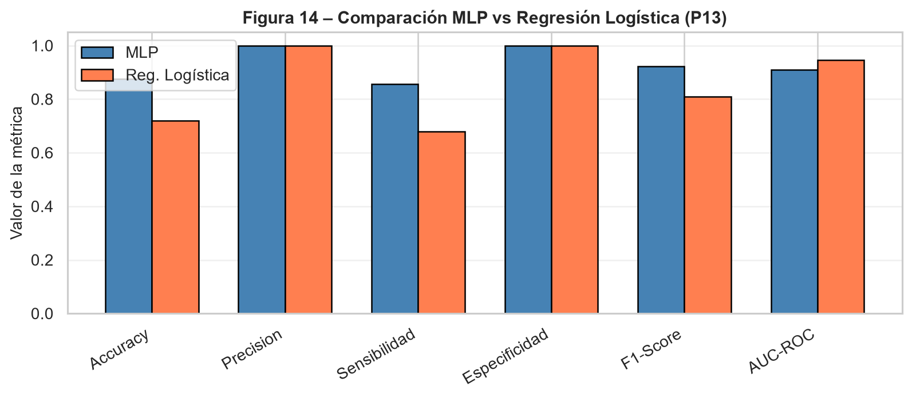
Con el umbral por defecto de 0.5, el MLP binario supera a la regresión logística en exactitud, sensibilidad y F1-score. El MLP clasifica correctamente 25 de las 32 observaciones de prueba, mientras que la regresión logística clasifica correctamente 23. La diferencia principal está en los falsos negativos: el MLP deja sin detectar 6 plantas enfermas y la regresión logística deja sin detectar 9.
Con el umbral 0.5, la regresión logística alcanza precisión y especificidad de 1.0000, mientras que el MLP presenta precisión de 0.9565 y especificidad de 0.7500 debido a un falso positivo. Sin embargo, la regresión logística presenta un AUC-ROC mayor (0.9464 frente a 0.8348), lo que significa que ordena mejor las observaciones según su probabilidad estimada de enfermedad, aunque su clasificación directa con umbral 0.5 sea peor.
Cuando se permite ajustar el umbral mediante Youden, la regresión logística supera al MLP en exactitud, sensibilidad, F1-score y AUC-ROC. Con este criterio, la regresión logística alcanza una sensibilidad de 0.9286, detectando 26 de las 28 plantas enfermas del conjunto de prueba, mientras que el MLP detecta 22 de 28. Además, ambos modelos mantienen especificidad de 1.0000, por lo que la mejora de sensibilidad de la regresión logística no genera falsos positivos adicionales en esta partición.
4.1.3.2 Interpretabilidad y costo computacional
La regresión logística tiene ventajas claras en interpretabilidad: sus coeficientes permiten identificar la dirección y magnitud del efecto de cada predictor, calcular razones de momios (odds ratios) y evaluar significancia estadística con las salvedades ya expuestas. Además, su costo computacional es bajo, el entrenamiento es rápido y el modelo es fácil de auditar, lo cual puede ser importante en un sistema de apoyo a decisiones agronómicas donde se requiere explicar por qué una planta fue clasificada como enferma.
El MLP, en cambio, es menos interpretable de forma directa y requiere mayor costo computacional de entrenamiento, pero puede capturar relaciones no lineales e interacciones entre variables espectrales y altura. En este conjunto de datos, esa flexibilidad mejora la clasificación directa frente a la regresión logística cuando ambos modelos usan el umbral por defecto de 0.5; sin embargo, esa ventaja desaparece cuando ambos modelos se comparan con umbrales ajustados y con AUC-ROC.
4.1.3.3 Modelo elegido
Para un sistema de apoyo a la decisión agronómica orientado a reducir el riesgo de no detectar plantas enfermas, elegiría la regresión logística con umbral ajustado por Youden como modelo principal en esta comparación. La razón es doble: alcanza el mejor desempeño operativo sobre el conjunto de prueba, especialmente en sensibilidad y F1-score, y además ofrece mayor interpretabilidad y menor costo computacional que el MLP.
Esta elección no implica descartar el MLP. El perceptrón multicapa sigue siendo útil como modelo flexible y como contraste no lineal, especialmente si en futuras muestras aparecen interacciones que la regresión logística no capture. No obstante, con los resultados actuales, la regresión logística logra una combinación más favorable de desempeño, explicación y simplicidad. Dado que el conjunto de prueba es pequeño, esta decisión debe validarse con nuevas particiones o datos independientes antes de adoptarse como recomendación definitiva.
4.2 Importancia de variables en redes neuronales
4.2.1 Pregunta 14: Implemente al menos una estrategia para evaluar la importancia de las variables predictoras en el perceptrón multicapa binario. Compare el ranking de importancia obtenido con el de la regresión logística. ¿Coinciden las variables más relevantes? ¿Qué implicaciones tiene esto para el monitoreo espectral de la enfermedad?
Para evaluar la importancia de variables en el perceptrón multicapa binario se implementó importancia por permutación de características (Permutation Feature Importance, PFI) sobre el conjunto de prueba. Esta estrategia consiste en alterar aleatoriamente los valores de una variable mientras se mantienen las demás sin cambios y medir cuánto cae el desempeño del modelo. Si la caída es grande, la variable es importante; si la caída es pequeña o negativa, el modelo no depende fuertemente de ella para sus predicciones.
Se utilizó la exactitud como métrica base y 30 repeticiones de permutación por variable. Dado el tamaño reducido del conjunto de prueba, los resultados deben interpretarse como una aproximación relativa y no como una medida absoluta definitiva.
4.2.1.1 Resultados de importancia por permutación
| Variable | Importancia PFI | Desviación estándar |
|---|---|---|
| height_med | 0.0354 | 0.0358 |
| evi_med | 0.0104 | 0.0519 |
| ndre_med | 0.0052 | 0.0511 |
| gli_med | -0.0344 | 0.0272 |
| ndvi_med | -0.0500 | 0.0222 |
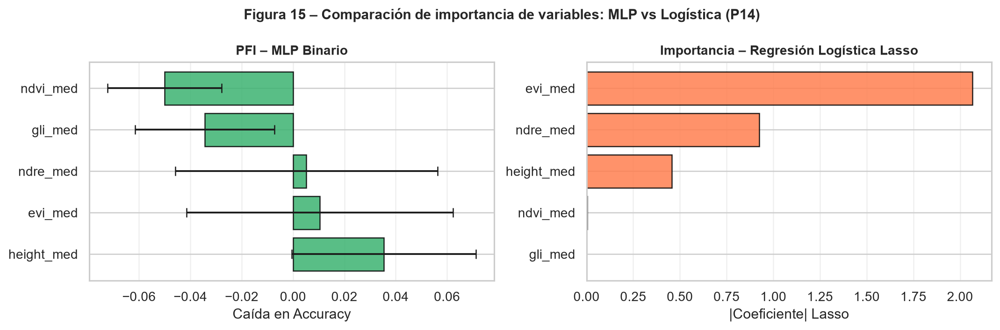
El MLP asigna la mayor importancia a height_med, seguido por evi_med y ndre_med. En cuarto lugar aparece gli_med y, finalmente, ndvi_med. Dado que la importancia se calculó como caída promedio en exactitud, estos valores indican cuánto se deteriora el desempeño del modelo cuando se destruye aleatoriamente la información de cada predictor. Las importancias de gli_med y ndvi_med son negativas, lo que indica que permutarlas no redujo la exactitud en esta partición; esto suele interpretarse como señal de bajo aporte marginal, redundancia o inestabilidad asociada al tamaño pequeño del conjunto de prueba.
4.2.1.2 Comparación con Lasso
| Variable | Ranking Lasso | Magnitud Lasso | Ranking MLP | Importancia MLP |
|---|---|---|---|---|
| evi_med | 1 | 2.0660 | 2 | 0.0104 |
| ndre_med | 2 | 0.9254 | 3 | 0.0052 |
| height_med | 3 | 0.4560 | 1 | 0.0354 |
| ndvi_med | 4 | 0.0046 | 5 | -0.0500 |
| gli_med | 5 | 0 | 4 | -0.0344 |
El ranking de la regresión logística Lasso fue: evi_med, ndre_med, height_med, ndvi_med y gli_med. El ranking del MLP fue: height_med, evi_med, ndre_med, gli_med y ndvi_med. Por tanto, ambos enfoques coinciden en las tres variables más relevantes, pero no en el orden completo. Esta coincidencia parcial es una señal favorable, porque sugiere que EVI, NDRE y altura concentran la mayor parte de la información predictiva, aunque cada modelo usa esa información de manera distinta.
4.2.1.3 Implicaciones para el monitoreo espectral
Desde el punto de vista del monitoreo de Verticillium sp., los resultados sugieren que EVI y NDRE son variables prioritarias para detectar cambios asociados al vigor y estrés de la vegetación. La altura también aporta información útil como complemento estructural, aunque su interpretación debe hacerse con cautela por el patrón no monótono observado en el análisis exploratorio.
El menor aporte relativo de GLI y NDVI en los modelos multivariados indica que, en este conjunto de datos, no serían las variables prioritarias para un sistema de alerta si se dispone de EVI, NDRE y altura. El caso del NDVI es más delicado: aunque tiene una fuerte relación univariada con la severidad, su menor importancia relativa en Lasso y PFI sugiere redundancia con otros índices, especialmente NDRE y EVI. Por ello, no se debería concluir que el NDVI es irrelevante, sino que su aporte marginal disminuye cuando se cuenta con índices espectrales más informativos dentro del mismo modelo.
4.2.1.4 Conclusión
La importancia por permutación en el MLP y la regularización Lasso coinciden en identificar a evi_med, ndre_med y height_med como las variables más relevantes, aunque no en el mismo orden. Esta convergencia parcial fortalece la interpretación de que la detección de la enfermedad está asociada principalmente con señales de vigor vegetal y estructura de la planta. Para un programa de monitoreo espectral, conviene priorizar índices sensibles al estado fisiológico de la vegetación, especialmente EVI y NDRE, complementados con información de altura cuando esté disponible.
5 Parte IV: Análisis de dependencia espacial
5.1 Construcción de la grilla y asignación de severidad
5.1.1 Pregunta 15: Tome una muestra aleatoria de 196 observaciones del conjunto de datos original. Construya una grilla de 14 x 14 celdas y asigne cada observación a una celda de la grilla según sus coordenadas espaciales o mediante asignación aleatoria si las coordenadas no están disponibles, justificando la decisión. Visualice la grilla mostrando la severidad asignada a cada celda con una escala de color apropiada para datos ordinales.
Para incorporar la dimensión espacial solicitada en el taller, se construyó una grilla regular de 14 x 14 celdas, equivalente a 196 posiciones espaciales. Dado que el conjunto de datos disponible no contiene coordenadas reales de campo para cada planta, se tomó una muestra aleatoria sin reemplazo de 196 observaciones del conjunto original y se asignó cada observación a una celda de la grilla de acuerdo con su posición secuencial dentro de la muestra.
La asignación se realizó definiendo dos coordenadas artificiales: x_coord, correspondiente a la columna de la grilla, y y_coord, correspondiente a la fila. La severidad original de cada observación se conservó como variable ordinal, con valores de 1 a 6, donde 1 representa planta sana y los valores mayores representan mayor severidad de la enfermedad.
El resumen de la construcción de la grilla se presenta a continuación:
| Indicador | Valor |
|---|---|
| Observaciones disponibles | 212 |
| Observaciones seleccionadas | 196 |
| Dimensión de la grilla | 14 x 14 |
| Celdas de la grilla | 196 |
| Coordenadas reales disponibles | No |
| Método de asignación | Muestra aleatoria sin reemplazo y ubicación secuencial en la grilla |
| Semilla reproducible | np.random.seed(42) definida en 00_configuracion.py |
La muestra de 196 observaciones conserva representación de todos los niveles de severidad:
| Severidad | Frecuencia |
|---|---|
| 1 | 26 |
| 2 | 41 |
| 3 | 32 |
| 4 | 43 |
| 5 | 42 |
| 6 | 12 |
La asignación completa de cada observación a su fila y columna de la grilla se guardó en resultados/tablas/p15_asignacion_grilla.csv.
5.1.1.1 Justificación metodológica
Esta decisión es necesaria porque el archivo no incluye coordenadas espaciales observadas. Por tanto, la grilla no debe interpretarse como una reconstrucción real del cultivo ni como una representación geográfica exacta de la distribución de Verticillium sp. en campo. Su función es metodológica: permite explorar cómo se implementaría un análisis espacial ordinal bajo una estructura regular y preparar el cálculo de dependencia espacial solicitado en la Pregunta 16.
La principal limitación es que, al asignar las plantas aleatoriamente a las celdas, se rompe cualquier posible estructura espacial real que pudiera existir en el cultivo. En consecuencia, si no se detecta autocorrelación espacial significativa, esto no demuestra que la enfermedad no tenga dependencia espacial en campo; solo indica que no aparece dependencia bajo la grilla artificial construida con la información disponible.
5.1.1.2 Visualización de la grilla
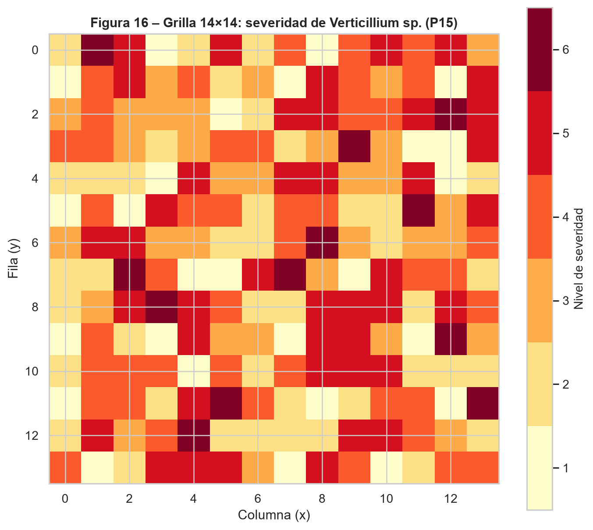
La escala de color utilizada es ordinal: los tonos más claros representan niveles bajos de severidad y los tonos más intensos representan severidades altas. Visualmente, no se observa un patrón espacial claramente agrupado de severidades altas o bajas. Las categorías parecen distribuidas de forma dispersa sobre la grilla, lo cual es coherente con el carácter aleatorio de la asignación espacial.
5.1.1.3 Conclusión
Se construyó una grilla de 196 observaciones siguiendo la especificación del taller. Sin embargo, debido a la ausencia de coordenadas reales, esta grilla debe entenderse como un ejercicio metodológico y no como evidencia espacial directa del patrón de enfermedad en campo. Para un análisis espacial agronómicamente concluyente sería necesario contar con coordenadas reales de cada planta o, al menos, con la posición relativa de las unidades de muestreo dentro del cultivo.
5.1.2 Pregunta 16: La severidad es una variable ordinal. Proponga y aplique al menos un método para evaluar la dependencia espacial en esta escala. Reporte el estadístico elegido, su valor p y su interpretación: ¿existe dependencia espacial significativa en la distribución de la severidad?
Para evaluar la dependencia espacial de la severidad se aplicó el índice de Moran global usando rangos de severidad. Esta adaptación es apropiada porque la severidad es una variable ordinal: las categorías tienen un orden natural, pero no necesariamente distancias iguales entre niveles consecutivos. Al trabajar con rangos, el análisis respeta la naturaleza ordinal de la variable y reduce la dependencia de supuestos métricos fuertes.
La matriz de vecindad se construyó sobre la grilla 14 x 14 considerando vecinas las celdas contiguas en las ocho direcciones posibles: horizontal, vertical y diagonal. Posteriormente, la matriz fue normalizada por filas para que cada celda aportara de forma comparable al estadístico, independientemente del número de vecinos disponibles en bordes y esquinas.
El método aplicado se resume en la siguiente tabla:
| Característica | Valor |
|---|---|
| Método elegido | Índice de Moran global |
| Tratamiento de la severidad ordinal | Rangos de severidad |
| Grilla | 14 x 14 |
| Número de celdas evaluadas | 196 |
| Criterio de vecindad | Reina: 8 direcciones |
| Normalización de pesos | Por filas |
| Nivel de significancia | 0.05 |
5.1.2.1 Resultados
| Estadístico | Valor |
|---|---|
| Índice de Moran global (I) | -0.0066 |
| Valor esperado bajo aleatoriedad (E[I]) | -0.0051 |
| Estadístico Z | -0.0382 |
| p-valor | 0.9695 |
El valor del índice de Moran global es prácticamente cero y muy cercano al valor esperado bajo la hipótesis nula de aleatoriedad espacial. Además, el p-valor de 0.9695 es mucho mayor que 0.05, por lo que no se rechaza la hipótesis nula de ausencia de autocorrelación espacial.
5.1.2.2 Interpretación
No existe evidencia estadística de dependencia espacial significativa en la distribución de la severidad dentro de la grilla construida. En términos prácticos, las celdas con severidad alta no tienden a ubicarse sistemáticamente cerca de otras celdas con severidad alta, ni las celdas con severidad baja muestran agrupamientos claros. Tampoco se observa un patrón significativo de dispersión espacial, pues el valor negativo de Moran es extremadamente pequeño.
Esta conclusión debe interpretarse junto con la limitación señalada en la Pregunta 15: como la grilla fue construida mediante asignación aleatoria y no a partir de coordenadas reales, el resultado refleja la ausencia de dependencia espacial en esa representación artificial. No permite descartar que exista autocorrelación espacial real en el cultivo si se dispusiera de coordenadas observadas.
5.1.2.3 Conclusión
Bajo la grilla artificial de 14 x 14 y usando rangos ordinales de severidad, el índice de Moran global no detecta dependencia espacial significativa (I = -0.0066, p = 0.9695). Por tanto, con la información disponible no hay evidencia de agrupamiento espacial de la enfermedad. Para una evaluación espacial definitiva sería indispensable repetir el análisis con coordenadas reales de campo y, preferiblemente, complementarlo con métodos locales como LISA para identificar posibles focos específicos de alta severidad.
5.2 Incorporación de coordenadas en la red neuronal
5.2.1 Pregunta 17: Tome el mejor modelo de perceptrón multicapa obtenido en las partes anteriores e incorpore las coordenadas espaciales (x, y) de cada observación como variables de entrada adicionales. Compare el desempeño con el modelo original sin coordenadas. ¿Mejora la clasificación al incluir información espacial explícita?
Para evaluar si la información espacial mejora el desempeño predictivo, se tomó el mejor perceptrón multicapa binario obtenido previamente y se entrenó una nueva versión incorporando dos variables adicionales: x_coord y y_coord. Estas coordenadas fueron generadas a partir de la posición de cada observación dentro de una grilla artificial, ya que el conjunto de datos no contiene coordenadas reales de campo.
El modelo con coordenadas mantuvo la misma arquitectura seleccionada para el MLP binario base, con el fin de que la comparación reflejara principalmente el efecto de añadir las variables espaciales y no un cambio simultáneo en la configuración de la red.
La configuración del experimento fue:
| Característica | Valor |
|---|---|
| Clasificación usada | Binaria: sano vs. enfermo |
| Arquitectura base | 2 capas ocultas, 64 neuronas/capa, lr=0.1 |
| Predictores base | ndvi_med, evi_med, ndre_med, gli_med, height_med |
| Predictores espaciales agregados | x_coord, y_coord |
| Origen de coordenadas | Coordenadas artificiales derivadas del orden de las observaciones |
| Balanceo | SMOTE aplicado solo sobre entrenamiento |
| Umbral de clasificación | 0.5 |
5.2.1.1 Resultados comparativos
| Modelo | Pred. | Exact. | AUC-ROC | Cambio exact. | Cambio AUC |
|---|---|---|---|---|---|
| MLP base sin coordenadas | 5 | 0.7812 | 0.8348 | 0 | 0 |
| MLP con coordenadas x,y | 7 | 0.6562 | 0.9196 | -0.1250 | 0.0848 |
Al incluir las coordenadas, la exactitud disminuye de 0.7812 a 0.6562, lo que representa una caída de 0.1250 puntos. Sin embargo, el AUC-ROC aumenta de 0.8348 a 0.9196, con una diferencia de 0.0848 puntos. Por tanto, el efecto no es uniforme: las coordenadas artificiales empeoran la clasificación discreta bajo el umbral 0.5, pero mejoran la capacidad global de ordenamiento probabilístico del modelo.
5.2.1.2 Interpretación
Desde el punto de vista estrictamente predictivo, el modelo con coordenadas obtiene menor exactitud que el modelo base, pero un AUC-ROC claramente mayor. Esto sugiere que las variables x_coord y y_coord pueden ayudar a ordenar mejor las observaciones según su probabilidad de enfermedad, aunque el umbral de clasificación usado no convierte esa mejor discriminación probabilística en más aciertos directos.
Sin embargo, esta mejora debe interpretarse con mucha cautela. Las coordenadas no provienen de mediciones reales en campo, sino que fueron construidas artificialmente a partir del orden de las observaciones. Por tanto, el incremento en desempeño no puede tomarse como evidencia de que exista un patrón espacial real de la enfermedad. Es posible que las coordenadas estén capturando algún patrón asociado al orden de registro de los datos o una estructura inducida por la forma en que se organizó el archivo.
Esta precaución es coherente con el resultado de la Pregunta 16: el índice de Moran global aplicado sobre la grilla artificial no detectó autocorrelación espacial significativa. Por ello, aunque las coordenadas mejoran el AUC-ROC del MLP, no se puede afirmar que la ubicación espacial real mejore la clasificación sin contar con coordenadas observadas.
5.2.1.3 Conclusión
La inclusión de coordenadas artificiales modifica el desempeño del MLP binario de forma ambivalente: reduce la exactitud, pero mejora el AUC-ROC. Por tanto, la respuesta a la pregunta es matizada: sí hay una mejora en la discriminación probabilística, pero no en la clasificación discreta bajo el umbral 0.5. Como las coordenadas son artificiales, esta mejora no constituye evidencia sólida de que la información espacial real mejore la clasificación. Para evaluar de forma válida el aporte espacial sería necesario repetir el análisis con coordenadas reales de campo.
5.2.2 Pregunta 18: Explore dos formas adicionales de incorporar la información espacial: coordenadas como único predictor e interacción multiplicativa entre coordenadas e índices espectrales. Para cada caso reporte las métricas de evaluación y compare con el modelo base sin coordenadas. Concluya sobre la utilidad de cada estrategia.
Se exploraron dos estrategias adicionales para incorporar la información espacial en la red neuronal. La primera consistió en entrenar un MLP usando exclusivamente las coordenadas x_coord y y_coord como predictores. La segunda consistió en añadir interacciones multiplicativas entre coordenadas e índices espectrales, específicamente x_coord * ndvi_med, y_coord * ndvi_med, x_coord * evi_med y y_coord * evi_med, además de los predictores originales.
Estas estrategias buscan responder dos preguntas distintas. El modelo con solo coordenadas evalúa si la ubicación, por sí sola, tiene poder predictivo. El modelo con interacciones evalúa si el efecto de los índices espectrales cambia según la posición espacial dentro de la grilla.
La configuración de las estrategias comparadas fue:
| Estrategia | Predictores | Pred. | Descripción |
|---|---|---|---|
| Modelo base sin coordenadas | ndvi_med, evi_med, ndre_med, gli_med, height_med | 5 | MLP binario base con indices espectrales y altura |
| Modelo con coordenadas x,y | ndvi_med, evi_med, ndre_med, gli_med, height_med, x_coord, y_coord | 7 | MLP base agregando coordenadas artificiales |
| Solo coordenadas | x_coord, y_coord | 2 | MLP entrenado exclusivamente con x_coord y y_coord |
| Coordenadas + interacciones espaciales | ndvi_med, evi_med, ndre_med, gli_med, height_med, x_coord, y_coord, x_ndvi, y_ndvi, x_evi, y_evi | 11 | MLP base con coordenadas e interacciones x/y con NDVI y EVI |
5.2.2.1 Resultados comparativos
| Estrategia | Exact. | AUC-ROC | Cambio exact. | Cambio AUC |
|---|---|---|---|---|
| Modelo base sin coordenadas | 0.7812 | 0.8348 | 0 | 0 |
| Modelo con coordenadas x,y | 0.6562 | 0.9196 | -0.1250 | 0.0848 |
| Solo coordenadas | 0.8750 | 0.8929 | 0.0938 | 0.0580 |
| Coordenadas + interacciones espaciales | 0.8125 | 0.8973 | 0.0312 | 0.0625 |
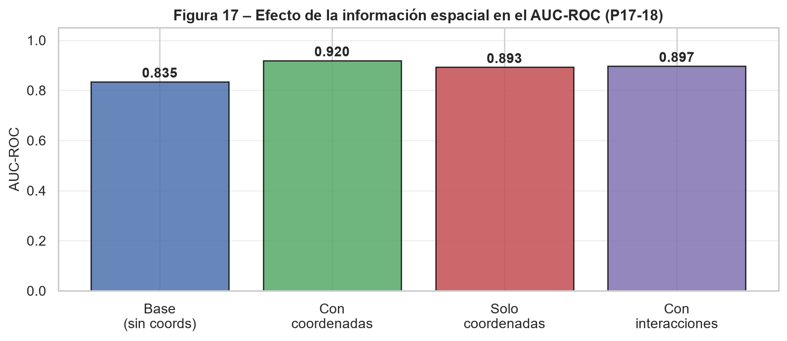
5.2.2.2 Coordenadas como único predictor
El modelo entrenado únicamente con x_coord y y_coord alcanza una exactitud de 0.8750, superior a la del modelo base sin coordenadas (0.7812). También obtiene un AUC-ROC mayor (0.8929 frente a 0.8348). Esto indica que, dentro de esta grilla artificial, la ubicación por sí sola muestra poder predictivo aparente.
En un contexto con coordenadas reales, un buen desempeño usando solo ubicación podría indicar focos espaciales de enfermedad, gradientes de infección o zonas del lote con condiciones ambientales favorables al patógeno. En este caso, en cambio, el resultado debe tratarse como una señal metodológica débil: puede reflejar estructura accidental en el orden del archivo, efectos del desbalance binario, el tamaño reducido del conjunto de prueba o sensibilidad a la partición usada.
5.2.2.3 Interacciones espaciales-espectrales
El modelo con interacciones multiplicativas obtiene una exactitud de 0.8125, superior a la del modelo base (0.7812), y su AUC-ROC aumenta de 0.8348 a 0.8973. En comparación con el modelo base, aporta una mejora moderada tanto en clasificación discreta como en discriminación probabilística. Sin embargo, no supera al modelo de solo coordenadas en exactitud ni al modelo con coordenadas simples en AUC-ROC.
Este resultado debe leerse con cautela porque las interacciones espaciales solo tienen sentido agronómico cuando las coordenadas representan posiciones reales. Si las coordenadas son artificiales, los productos x * NDVI, y * NDVI, x * EVI y y * EVI pueden introducir complejidad adicional sin significado espacial y capturar patrones accidentales de la muestra.
5.2.2.4 Conclusión
De las estrategias evaluadas, el modelo con solo coordenadas obtiene la mayor exactitud (0.8750), mientras que el modelo con coordenadas simples añadidas a los predictores originales obtiene el mayor AUC-ROC (0.9196). El modelo con interacciones multiplicativas también supera al modelo base en ambas métricas, aunque de forma más moderada.
En consecuencia, las estrategias espaciales muestran mejoras numéricas frente al modelo base en algunas métricas, especialmente en AUC-ROC, pero esas mejoras no pueden interpretarse como evidencia agronómica de dependencia espacial porque las coordenadas son artificiales. La incorporación de información espacial explícita solo sería recomendable en una fase posterior si se dispone de coordenadas reales de campo. Con los datos actuales, las variables espectrales y la altura siguen siendo la fuente principal y más defendible de información predictiva.
6 Parte V: Propuesta libre del estudiante
6.0.1 Pregunta 19: Propuesta metodológica propia. Proponga, justifique e implemente al menos una extensión o análisis complementario no solicitado explícitamente en este taller. Documente claramente el objetivo de su propuesta, la metodología empleada, los resultados obtenidos y las conclusiones.
Como propuesta metodológica propia se implementaron dos extensiones complementarias. La primera consistió en evaluar el efecto de la regularización por dropout en el perceptrón multicapa binario, manteniendo además el uso de early stopping. La segunda consistió en comparar el desempeño de los modelos neuronales con un algoritmo no neuronal: bosque aleatorio (Random Forest), usando las mismas particiones de entrenamiento, validación y prueba.
El objetivo de esta propuesta fue evaluar dos aspectos relevantes para un sistema de apoyo a la decisión agronómica: la robustez del MLP frente al sobreajuste y la conveniencia de contrastar la red neuronal con un modelo alternativo de aprendizaje automático, capaz de capturar relaciones no lineales y entregar una medida directa de importancia de variables.
6.0.1.1 Metodología
Para la regularización de la red neuronal se entrenó un MLP binario con la misma arquitectura base seleccionada previamente, pero incorporando capas Dropout con una tasa de 0.3 después de cada capa oculta. El entrenamiento usó early stopping monitoreando la pérdida de validación, con paciencia de 20 épocas y restauración de los mejores pesos. Esta combinación busca reducir el sobreajuste: dropout fuerza a la red a no depender excesivamente de neuronas específicas, mientras que early stopping detiene el entrenamiento cuando el desempeño de validación deja de mejorar.
Como modelo alternativo se entrenó un bosque aleatorio de 200 árboles. El modelo se ajustó sobre el mismo conjunto de entrenamiento balanceado con SMOTE y se evaluó sobre el mismo conjunto de prueba usado en los modelos anteriores. También se configuró class_weight = "balanced"; sin embargo, al partir de un entrenamiento ya balanceado, esta opción tiene un efecto práctico mínimo. Se reportaron exactitud y AUC-ROC para mantener la comparación con las secciones previas.
Las extensiones implementadas se resumen en:
| Extensión | Objetivo | Implementación |
|---|---|---|
| Regularizacion por Dropout | Evaluar si dropout reduce sobreajuste y mejora generalizacion del MLP binario | Dropout 0.3 despues de cada capa oculta y early stopping |
| Comparacion con Random Forest | Contrastar el MLP con un algoritmo no neuronal usando la misma particion y metricas | Random Forest con 200 arboles y class_weight=‘balanced’ |
6.0.1.2 Resultados comparativos
Para hacer la comparación operativa de forma consistente con las secciones anteriores, se usó el umbral óptimo de Youden en cada modelo. Las métricas obtenidas fueron:
| Modelo | Umbral | Exactitud | Sensibilidad | Especificidad | F1-score | AUC-ROC |
|---|---|---|---|---|---|---|
| Regresion logistica | 0.3365 | 0.9375 | 0.9286 | 1 | 0.9630 | 0.9464 |
| MLP binario base | 0.9226 | 0.8125 | 0.7857 | 1 | 0.8800 | 0.8348 |
| MLP con Dropout | 0.3025 | 0.9375 | 0.9286 | 1 | 0.9630 | 0.9286 |
| Random Forest | 0.7500 | 0.8438 | 0.8214 | 1 | 0.9020 | 0.8929 |
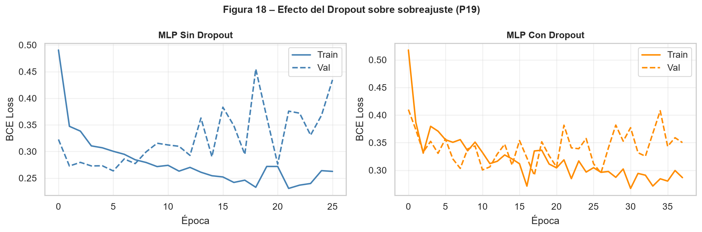
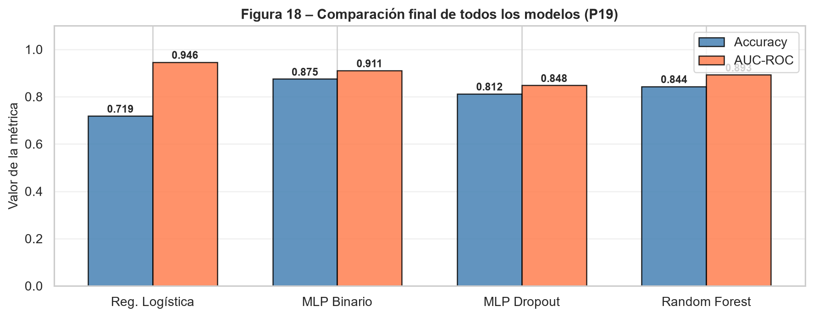
La regresión logística obtiene el mayor AUC-ROC (0.9464) y también una exactitud de 0.9375 con el umbral de Youden. El MLP con dropout alcanza la misma exactitud, sensibilidad y F1-score que la regresión logística, aunque con un AUC-ROC menor (0.9286). El MLP binario base obtiene una exactitud de 0.8125 y un AUC-ROC de 0.8348, mientras que el bosque aleatorio presenta un desempeño intermedio (exactitud de 0.8438 y AUC-ROC de 0.8929).
6.0.1.3 Efecto de Dropout y Early Stopping
El comportamiento de entrenamiento de los dos MLP se resume en:
| Modelo | Épocas | Pérd. entren. | Pérd. valid. | Pérd. valid. mín. | Mejor época |
|---|---|---|---|---|---|
| MLP binario base | 40 | 0.2713 | 0.3226 | 0.2365 | 20 |
| MLP con Dropout | 23 | 0.3871 | 0.4007 | 0.3347 | 3 |
El Dropout cambia de forma importante la dinámica de entrenamiento: el modelo con Dropout se detiene después de 23 épocas, mientras que el MLP base entrena 40 épocas. En el conjunto de prueba, el MLP con Dropout mejora frente al MLP base al usar el umbral de Youden: la exactitud pasa de 0.8125 a 0.9375, la sensibilidad de 0.7857 a 0.9286 y el AUC-ROC de 0.8348 a 0.9286. Esto sugiere que la regularización puede ayudar a generalizar mejor en esta corrida.
Sin embargo, la pérdida mínima de validación del MLP base es menor que la del modelo con Dropout. Por tanto, no se debe concluir de forma absoluta que Dropout sea siempre superior; más bien, se observa una mejora empírica en las métricas de prueba bajo esta partición y este umbral. Dado el tamaño reducido del conjunto de prueba, sería recomendable repetir el experimento con varias semillas o validación cruzada antes de adoptar Dropout como decisión definitiva.
6.0.1.4 Comparación con Random Forest
Random Forest no supera a la regresión logística ni al MLP con Dropout en AUC-ROC, pero sí supera al MLP binario base en esta corrida y ofrece una ventaja práctica: permite obtener una importancia de variables basada en la reducción de impureza de los árboles. El ranking obtenido fue:
| Variable | Importancia |
|---|---|
| evi_med | 0.2943 |
| ndre_med | 0.2819 |
| ndvi_med | 0.1843 |
| gli_med | 0.1248 |
| height_med | 0.1147 |
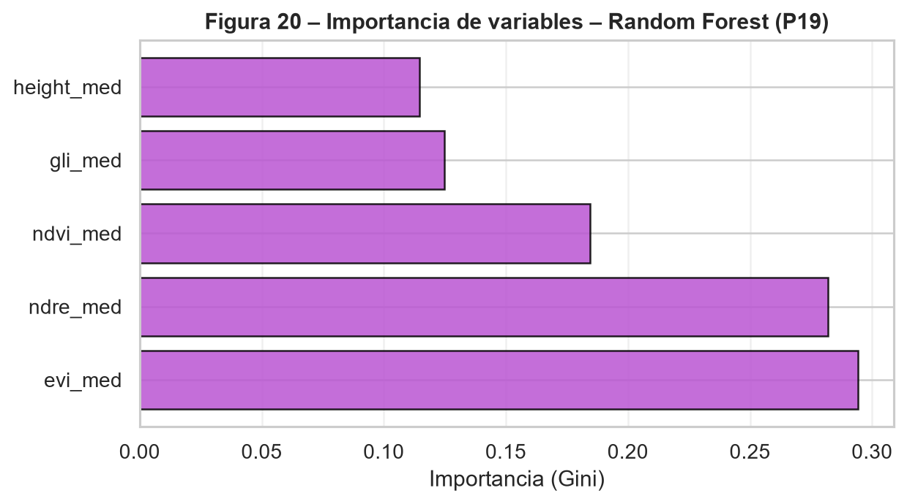
El Random Forest identifica como variables más importantes a evi_med y ndre_med, coincidiendo con la regresión logística Lasso en que estos índices son predictores centrales. A diferencia del MLP por permutación, que ubica primero a la altura, Random Forest asigna mayor importancia relativa al NDVI y menor importancia a la altura. Esta diferencia puede deberse a que los árboles capturan umbrales y divisiones no lineales sobre los índices espectrales, mientras que el MLP aprovecha combinaciones más distribuidas entre variables.
6.0.1.5 Conclusión de la propuesta
La propuesta libre cumple dos objetivos complementarios. Primero, muestra que incorporar Dropout y early stopping puede mejorar las métricas de prueba del MLP binario en esta partición, aunque el resultado debe confirmarse con repeticiones por la variabilidad propia de las redes neuronales y el tamaño reducido del conjunto de prueba. Segundo, la comparación con Random Forest aporta un contraste no neuronal útil: aunque no mejora el desempeño global, confirma la relevancia de los índices EVI y NDRE.
En conjunto, la regresión logística sigue siendo el modelo más sólido por su mayor AUC-ROC e interpretabilidad, mientras que el MLP con Dropout aparece como una alternativa competitiva cuando se priorizan métricas operativas como sensibilidad y F1-score. Para trabajos futuros se recomienda probar varias tasas de Dropout, por ejemplo 0.1, 0.2 y 0.3, y repetir las particiones para evaluar si la mejora observada es estable.
7 Conclusiones generales
El análisis desarrollado permitió evaluar la severidad de Verticillium sp. desde tres enfoques complementarios: clasificación multiclase, clasificación binaria y análisis espacial exploratorio. En la clasificación múltiple, las categorías de severidad presentan solapamiento, especialmente entre niveles adyacentes, lo que confirma que el problema no es trivial y que una única métrica global puede ocultar errores importantes entre clases.
La recodificación binaria sano/enfermo simplifica el problema y mejora la utilidad práctica del modelo para detección temprana, aunque implica pérdida de información ordinal. Bajo este enfoque, la regresión logística con umbral ajustado ofrece la combinación más sólida de AUC-ROC, sensibilidad e interpretabilidad, mientras que el MLP con Dropout aparece como una alternativa competitiva en métricas operativas. Esto sugiere que la selección del modelo debe depender del objetivo: detección sensible de plantas enfermas, explicación transparente de los factores asociados o exploración de relaciones no lineales.
Los análisis de importancia de variables convergen en la relevancia de los índices asociados al vigor vegetal, especialmente EVI y NDRE. El NDVI muestra una fuerte asociación univariada con la severidad, pero pierde aporte marginal en modelos multivariados debido a su redundancia con otros índices. La altura puede aportar información adicional, aunque su interpretación debe hacerse con cautela por su relación no monótona con la severidad.
El análisis espacial permitió implementar la grilla y calcular el índice de Moran global, pero sus conclusiones están limitadas por la ausencia de coordenadas reales. Con la grilla artificial no se encontró dependencia espacial significativa, y las mejoras observadas al incluir coordenadas en la red neuronal no pueden interpretarse como evidencia agronómica definitiva. Para estudios futuros, la disponibilidad de coordenadas reales permitiría evaluar focos de infección, autocorrelación local y estrategias de manejo espacialmente focalizado.
En conjunto, el trabajo muestra que los datos espectrales contienen señal suficiente para apoyar la detección de severidad de la enfermedad, pero también evidencia la importancia de documentar cuidadosamente las decisiones de preprocesamiento, partición, balanceo de clases, selección de umbral e interpretación de variables antes de usar estos modelos como apoyo a decisiones agronómicas.